Your whole collection,
from SID to FLAC.
SoniqBoom is a self-hosted music server that plays the formats other servers forget — chiptune, tracker modules, SID, MIDI, console rips — alongside FLAC, DSD and the common lossy codecs, streamed to any browser on your network.
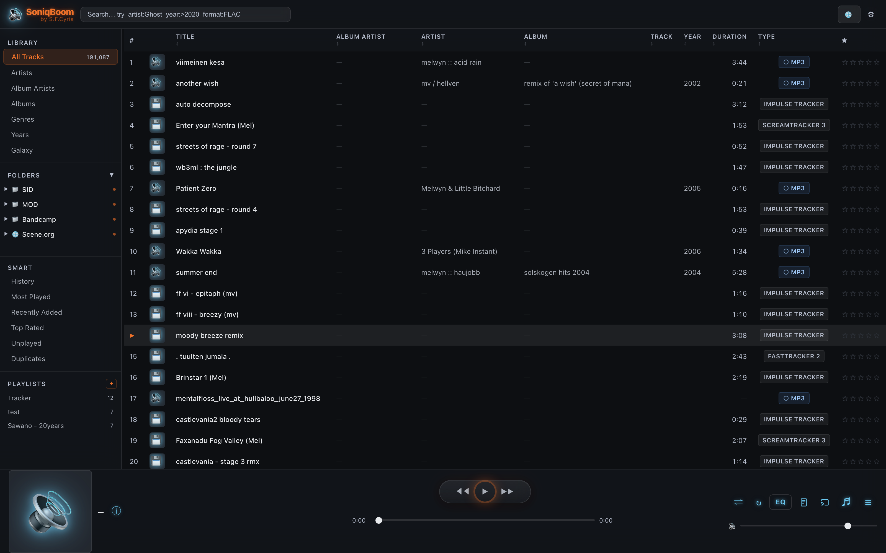
01What's inside
One server for the everyday lossless library and the weird corners of music history.
Chiptune & console
SID, NSF, SPC, GBS, VGM, AY, KSS, SAP, GYM, HES — rendered on the fly, with tunable 6581 / 8580 SID fidelity.
Tracker modules
MOD, XM, IT, S3M, MED and the full libopenmpt family — each channel metered on its own, up to 32 at once.
Amiga & Atari exotica
About 175 UADE players — TFMX, Future Composer, Jochen Hippel, SidMon — plus AHX, HivelyTracker and Atari ST SNDH / YM / SC68.
Portable & console rips
The PSF family in full — PSF, PSF2, GSF, USF, 2SF, SSF, DSF and NCSF — straight from the reference emulation cores.
AdLib / OPL FM
The sound of DOS gaming — id Software IMF, ROL, CMF and more, played by AdPlug with the Nuked OPL3 emulator.
Lossless & DSD
FLAC, ALAC, WAV, AIFF, WavPack — plus 1-bit DSD (DSF / DFF / WSD) and the common lossy codecs: MP3, AAC, Ogg Vorbis, Opus and Musepack.
Visual library
Per-channel VU meters, a live spectrum fallback, an animated decode signal-chain, and the Library Galaxy star-field.
Scene origins
Retro modules matched by fingerprint against Modland fill in the original scene author and the tune's provenance path.
Network libraries
Attach FTP, SMB and WebDAV shares straight from the admin panel — no operating-system mount required.
Modland catalogue
One switch lists Modland's module archive — hundreds of thousands of tunes — in your library; a tune is downloaded only when it is needed — to play it or to read its details.
OpenSubsonic API
Connect Amperfy, Symfonium, DSub, Feishin and the wider Subsonic app ecosystem to your server.
Internet radio
A curated demoscene & chiptune station pack plus the worldwide directory — HLS and classic streams alike, with live now-playing titles and cover art.
Casting Beta
Send playback to Chromecast, AirPlay and DLNA receivers — even rendered SID and tracker tunes.
Multi-user & PWA
Accounts with roles, multi-room sync, instant mixes, smart playlists, offline downloads, time-synced lyrics, scrobbling, and an installable web app.
02Install & first run
SoniqBoom runs on macOS and Linux. Point it at your music, hit scan, and open it in any browser.
xcode-select --install, which adds the Xcode Command Line Tools; Linux:
apt install git or your distro's equivalent). On
Linux you also need curl and a distribution whose Python 3 is 3.11 or newer —
the installer stops if git or curl is missing; on macOS it installs Homebrew and Python 3.12 for you. The
installer fetches everything else — ffmpeg and all the renderers. Any modern desktop or mobile browser can play the library; plan for memory that grows with
your collection, since the whole index lives in RAM (see System notes).macOS & Linux — one-shot install
# clone, install everything, and start the server git clone https://github.com/SFCyris/SoniqBoom.git cd SoniqBoom bash install.sh # Python, ffmpeg, and ALL retro renderers bash run.sh # starts the server on port 8080
install.sh installs sidplayfp (SID), fluidsynth (MIDI),
libopenmpt (trackers), uade (AHX + Amiga exotica), libgme (console
chiptunes), adplay (AdLib/OPL), the Atari ST renderers (psgplay and sc68) and zxtune123 (the PSF console-rip family, MED 2–4 modules and VGM files that use a chip libgme lacks) — Homebrew packages and source builds on macOS; on
Linux your distribution's packages (apt, dnf, pacman or zypper), the prebuilt zxtune123 and
source builds of psgplay, uade and sc68 where the distribution has none, plus
lha from lhasa for LHA archives where the distribution packages it. On Linux, sidplayfp
is built from source with libsidplayfp 3.1 and libresidfp into /usr/local (a few minutes),
unless one with libsidplayfp 3.1 or newer is already installed; if the build fails, the distribution's
package is used. On Debian / Ubuntu, if AdLib files don't
play, install the adplay package. The HivelyTracker decoder and the StSound engine (Atari ST
.ym) are bundled with SoniqBoom and compiled the first time such a file plays, so the server needs a C
and a C++ compiler — the installer adds them. MIDI needs a SoundFont: under gear → Renderers → Soundfonts, use
↑ Upload .sf2/.sf3 or pick one from Download Known Soundfonts.
Every other format in this guide plays out of the box.run.sh starts the server in the background and writes its log to log/soniqboom.log in
SoniqBoom's data folder. bash shutdown.sh stops it and bash restart.sh restarts it; to
use another port, start it with bash run.sh --port 9090 and give shutdown.sh and
restart.sh the same --port. On macOS, run.sh also puts a 🔊 icon in the
menu bar with Open SoniqBoom, Start SoniqBoom, Restart SoniqBoom, Stop SoniqBoom,
Settings, Status, Source on GitHub and About SoniqBoom; Quit Menu Icon (server
keeps running) removes the icon and leaves the server running.
The server listens on every network interface; to reach it from this machine only, set "host"
under "server" in SoniqBoom.conf to "127.0.0.1" and restart it.
Or run it in Docker
One container ships ffmpeg, all the renderers and a General MIDI SoundFont. Your music mounts read-only at
/music; everything SoniqBoom keeps — the library index, user accounts, the settings file (network
shares, folder aliases, services and the other admin settings), prefs.json, the cover-art and render
caches, SoundFonts you add, saved share passwords and last.fm / ListenBrainz logins, and logs — lives in one named
volume (/data), so it is kept when the container is recreated, for example by an update.
Before the first start, put your music in a music folder inside the SoniqBoom folder (or make
music a symlink to your music folder — links inside it that point elsewhere don't work in the
container) — or change the ./music line in docker-compose.yml to your music's path. The
first docker compose up -d builds the image.
# clone, build, and start — then create the first admin git clone https://github.com/SFCyris/SoniqBoom.git cd SoniqBoom docker compose up -d docker compose exec soniqboom soniqboom-setadm -user alice -passwd 'a-strong-password'
Open http://<host>:8080, sign in, and add /music as a library folder.
For automatic HTTPS on your own domain, the repo includes a Caddy stack: point your domain's DNS at this
host, open ports 80 and 443, replace music.example.com in deploy/Caddyfile with your
domain, stop the plain setup (docker compose down; the volume is kept), then run
docker compose -p soniqboom -f deploy/docker-compose.https.yml up -d from the SoniqBoom
folder. -p must be the plain setup's project name: the part before _soniqboom-data in
docker volume ls (soniqboom for a git clone, soniqboom-main for a folder
unzipped from the ZIP). Use the same -p and -f with every docker compose
command for this setup. An HTTPS setup first started without -p uses its own volume,
deploy_soniqboom-data: keep leaving -p out for that one.
To update, run only the block for your setup. Everything on /data is kept, including the library
index, so there is no full rescan. A container from an image before 1.14.0 kept its settings, and the
SoundFonts added in it, inside the container, so after the first update to 1.14.0 or later, settings (shares,
services, sign-up and password rules, renderer settings, the Re-apply automatically switches) need to be set once more; from then on they're kept.
To keep those SoundFonts, copy them out before you update
(docker cp soniqboom:/app/soundfonts ./old-soundfonts) and add them again under
gear → Renderers → Soundfonts (↑ Upload .sf2/.sf3). The new container can't read that
container's last.fm / ListenBrainz logins either: enter them again under gear → System → My
Account (admin accounts only).
# Compose, built from source git pull docker compose up -d --build # Compose, prebuilt image (image: line enabled) docker compose pull docker compose up -d # HTTPS setup, built from source git pull docker compose -p soniqboom -f deploy/docker-compose.https.yml up -d --build # HTTPS setup, prebuilt image (image: line enabled and build: .. commented out in # deploy/docker-compose.https.yml — as shipped, that file builds from source) docker compose -p soniqboom -f deploy/docker-compose.https.yml pull docker compose -p soniqboom -f deploy/docker-compose.https.yml up -d
Full details live in DEPLOY.md; what a backup needs to include
is under Back up & restore.
Then, the first time you start it
- Create the first admin account. A fresh install has no users; the native install prompts you
for a username and password on the terminal. If it didn't prompt — or to add/reset one later — run this
from inside the SoniqBoom folder (a new account made this way is an admin unless you add
-role editor-role readonly; for an existing account it changes only what you pass):bash setup-admin.sh -user alice -passwd 'changeme123'
- Sign in. Open
http://localhost:8080and enter those credentials. Your name then shows in the header, with ⎋ to sign out. - Open the admin panel with the gear icon (top-right).
- Add a music folder — on the Library tab under Music Folders, choose Local Path
and + Add for a folder on this machine, or Network Share and + Connect for an
FTP/SMB/WebDAVshare. - Wait for the scan — roughly two minutes per 50,000 tracks; the header shows its progress (Scanning …% — click it to open the admin panel). Your library is ready when it finishes.
03Browse your library
All Tracks, Artists, Album Artists, Albums, Genres, Years, Scene groups and the Library Galaxy — plus folder trees that mirror your shares, and instant search.
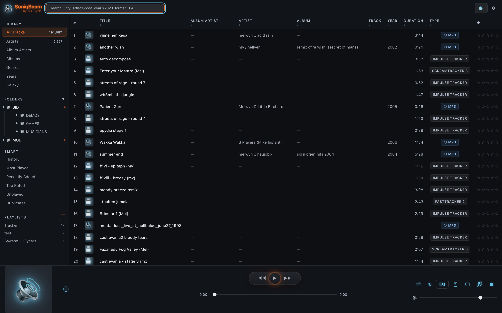
Folders. Each music folder and share is a root of the sidebar's folder tree (🌐 marks a share). Click a folder to list its tracks; a folder that holds only subfolders lists every track below it. With a folder focused, → / ← open and close it, ↑ / ↓ move through the tree and Enter lists it.
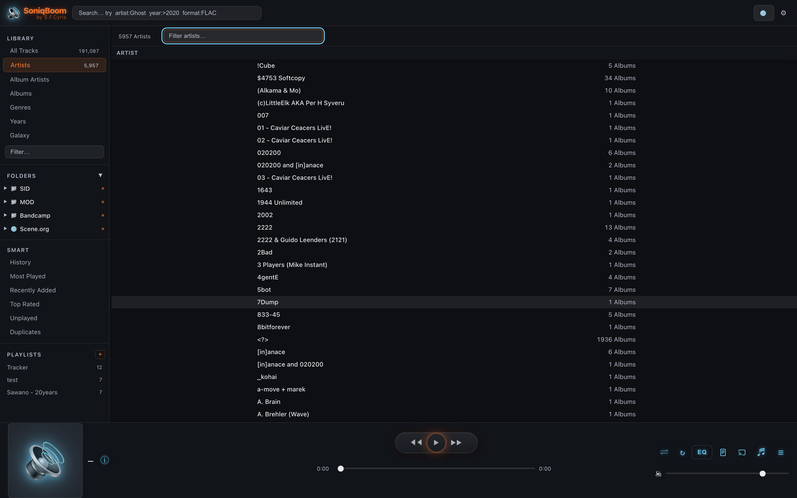
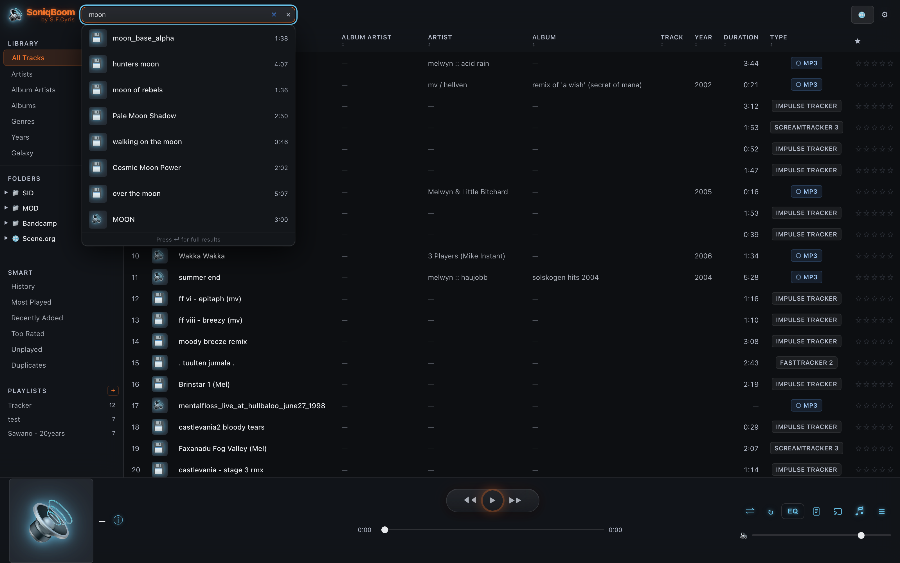
Getting around a big library
Every track list in the main view — All Tracks, a genre, artist, album, folder, search or smart view — has Play all and Shuffle buttons in its header — browse to a genre, artist or album and start it playing in one click, or press P to play and Shift+P to shuffle. A big genre or artist lists its first 2,000 tracks — the header says so — while Shuffle covers every match; a search lists all of its matches (see Search). Track lists of more than 40 rows, unsorted or sorted by title, artist, album or album artist (search results: sorted by one of these), and long group lists, show an A–Z rail down the left edge — click a letter to jump straight to that part of the list. Right-click a track (or a selection) for Play, Play next, Add to queue, Add to playlist…, a row of rating stars, the Problem report, Go to artist or Go to album to pivot to everything by that artist or on that album, and Get info for Track Info. And the ◎ Locate button on the player bar — or the G key — scrolls the list back to whatever's playing, which is marked with a small animated equalizer. If part of a long list can't be loaded from the server, its rows say so and offer Retry.
Select, sort and arrange
Click a row to select it and double-click it to play from there (J / K move the keyboard focus and Enter plays the focused row); ⌘/Ctrl-click and Shift-click select several, and with two or more selected a bar offers ▶ Play, + Queue, + Playlist and × Clear. Click an Album Artist or Album cell to open it. Artists, Album Artists, Albums, Genres and Years list each name with its number of tracks and a filter box above the list; tracks without the tag are under [No Artist], [No Album Artist] or [No Album]. The ⊞ button switches an Albums list to a cover grid and back. The browser's Back button goes up one level, and after a reload SoniqBoom reopens the sidebar view (Artists, Albums, the Galaxy, a smart view …) you had open.
Click a column header to sort by it, and again to reverse; the sort is remembered in this browser. Sorting ignores case and leading or trailing spaces, puts tracks with an empty value last (first when reversed) and orders equal values the same way every time, so a list sorts the same whatever its size and wherever it was opened from. Year and Duration sort by the number, with tracks that have none last; Track sorts by disc and then track number, with tracks that have no track number last; Location sorts by the file's path. Right-click the header row to choose the columns (#, Cover, Title, Album Artist, Artist, Album, Track, Year, Duration, Type, Location and ★ — Location starts hidden), and drag a header's edge to change its width. A list of more than 5,000 tracks, such as All Tracks in a big library, sorts by Title, Album Artist, Artist, Album, Year, Duration or Type; a folder of more than 2,000 tracks, or one listing every track below it, keeps its folder order.
Several artists or genres in one tag
When a tag holds several values — several artists, album artists, composers or genres in an MP3, AIFF, FLAC, Ogg, Opus, M4A, DSD or other tagged file — SoniqBoom keeps them all. The artists are shown together, as “Artist A • Artist B”, and each of them has its own entry in the Artists and Album Artists views with the track listed under each; every genre is listed in the Genres view. Subsonic apps get each artist and genre on its own too. If a FLAC, Ogg, Opus or M4A file shows only one of its values, it shows the others once the file changes and is read again.
The Library Galaxy
Every track in your collection rendered as a drifting star-field — each format its own glowing constellation, sized by how much of it you own. The legend doubles as a census of your library. Click a format's chip under the star-field (or its row in List) to list that format's tracks (Format: …; Back returns to the Galaxy). The toolbar switches between Galaxy and List — a table of Format · Tracks · Share you can sort and narrow with Filter formats… — and the family chips Trackers, Chiptune, Lossless, Lossy and Other narrow both. While visualizations are switched off, or your system asks for reduced motion, the view shows the list.
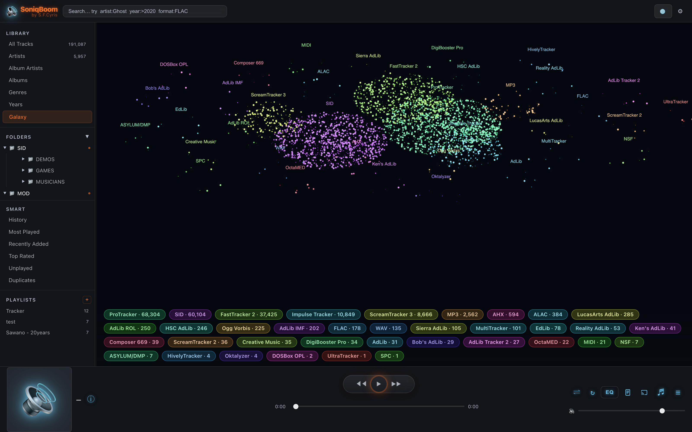
Scene groups
Once the Demozoo index has been applied (gear → Metadata → Scene groups (Demozoo)), the sidebar's Library list gains Scene groups: every demoscene group with the number of its tracks — click one for its tracks, with Play all and Shuffle. The item stays hidden while the library holds no scene-group data.
04Find anything
A search bar that understands field operators, and smart views that surface your library by listening habit.
Search with field operators
Type anything to search titles, artists, album artists, albums, composers, scene groups and games at once:
every word you type must match, and a word of two or more characters matches the start of a word
(var finds “Varga”), and case and accents don't matter (oorni finds “Öörni”). As you
type, a preview lists the first matching tracks and how many tracks match (and, while a Stations list is open,
matching radio stations first — see Internet radio):
↓ / ↑ pick one and Enter plays it;
otherwise Enter opens the full results. They list every match — the header gives the
exact number, e.g. Search: crack — 18,432 matches — and, like All Tracks, load as you scroll.
A new search lists its best matches first (Best match): a title that is exactly what you typed,
then tracks with all of your words as whole words in one field, then tracks where your words appear together,
in order, then tracks with all of your words in one field. A whole word counts more than the start of a word,
so searching ghost lists the artist Ghost before the title “Ghostbusters”. Among equal matches, a
match in the title counts more than one in the artist or album artist, which counts more than one in the
album, which counts more than one in the composer, scene group or game. Equal matches list newest first. A search made only of field operators
(format:SID year:>2020) lists newest first; with words besides the operators, the operators
narrow the matches and the words rank them. The preview shows the first of the same matches. Click a column
header (Title, Artist, Album Artist, Album, Year, Duration or Type) to sort all of the matches by it, and click
it again to reverse the order; the Best match button in the results header puts the best
matches first again (for a search of only field operators it reads Newest first). Track and
Location sort a search of up to 2,000 matches. On a phone the results list best matches first, and the
number of matches says so. Play all and Shuffle play
all of the matches, and Shift-click selects a range of rows as in All Tracks. When a
scan finishes, or which tracks can play changes while Hide is on, the open results are read again where
you are.
Esc closes the preview and × clears the box. The first time you click into the empty box, the common operators (artist:,
album:, game:, year:, format:) show as chips you can click. Narrow
it with field operators — stack as many as you like:
artist:Ghost album:Impera year:>2020 format:FLAC
| Operator | Matches |
|---|---|
artist: album_artist: | The start of any word of an artist's name; case, accents and extra spaces are ignored — artist:marcin and artist:sidder both find “Marcin Romanowski (Sidder)”. |
album: genre: | The whole album or genre name, case ignored — album:Impera, genre:"Synth Pop". |
game: | A game: matches the start of any name of a track's game — for a retro tune the names its file header, Modland, Demozoo, the song database, a Modland file name, its archive's name and its folder name give it, or an album you set; for any other music file its GAME tag; or a game you typed — and, for a C64 SID or Atari ST tune whose game is unknown or only taken from its folder name or a Modland file name — not one you typed or cleared — the start of its title; case, accents, extra spaces and a leading “The” are ignored — game:uridium finds the game “Uridium” and a SID titled “Uridium 2”, game:"last ninja" also finds “The Last Ninja”, game:"the last ninja" also finds “Last Ninja 2”, and game:pokemon also finds “Pokémon Gold”. |
year:2003 · year:>2020 · year:<2000 · year:>=2020 · year:<=1999 · year:1985-1990 · year:2000- · year:-1990 | Exact year, after a year, before a year (year:<2000 is up to 1999), from / up to and including a year, or a range — open at either end. |
format:FLAC · format:SID · format:"FastTracker 2" | One format, named as in the Type column (case ignored) — format:ProTracker for .mod files, format:AAC or format:ALAC for .m4a, format:DSD64. |
artist:"The Ghost Inside" | Quote any value containing spaces. |
field:) is flagged in the preview as Unknown field instead of silently returning nothing.Smart views
The sidebar's Smart section builds these on the fly. Listening history and play counts are each account's own — plays from Subsonic apps count for the account the app signs in with — while ratings and the library are shared by every account:
Listening History
The last 50 plays, most recent first.
Most Played
The 100 highest play-counts, ranked.
Recently Added
The 100 newest tracks the scanner found.
Top Rated
The 100 highest-rated tracks.
Unplayed
The 100 newest tracks you haven't played yet.
Duplicates
Likely duplicate tracks, grouped for cleanup — the 200 largest groups, best copy first, with their locations; Export CSV saves the list.
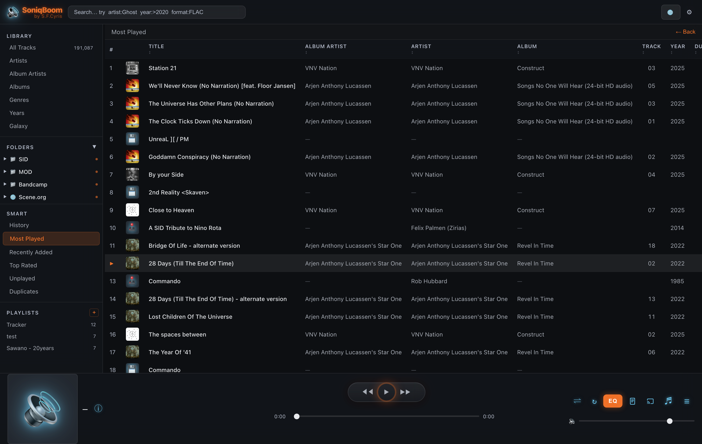
Instant Mix radio
Press the 📻 radio button in the player toolbar while anything is playing and SoniqBoom builds an endless queue around it — tracks picked by genre, artist, era, tempo and format, spread across artists. A SID radio stays chiptune, a FLAC radio follows the genre. The queue refills itself as you listen, seeded from whatever is playing now.
Radio view. Starting a radio opens a full radio view: the cover art large with a live oscilloscope playing across it, the track that's on, and the upcoming tracks with their covers — the list fades out at the bottom; click any entry to jump to it. Save as playlist keeps the mix. Leaving the view — Stop radio, Esc, the × or a click beside it — ends the radio; the tracks already queued keep playing. While a radio runs, shuffle stays off — the radio picks the order.
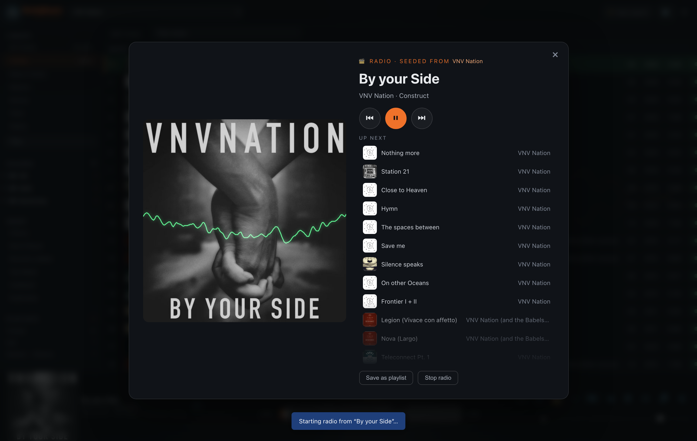
More like this
Select one track in the list and press the ◆ button in the player toolbar — a panel lists its ten closest matches with a relative similarity score, leaving out tracks that can't play right now. Tracks that have been played before are also compared by their loudness contour — songs that move the same way rank higher. Click a result to play it.
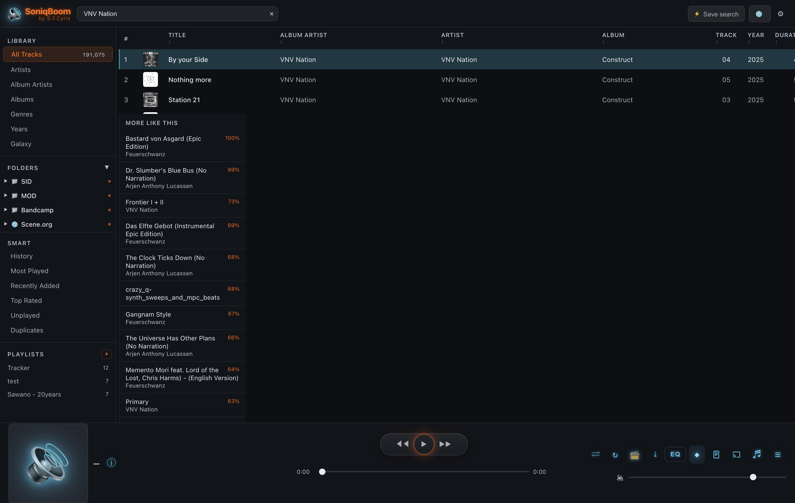
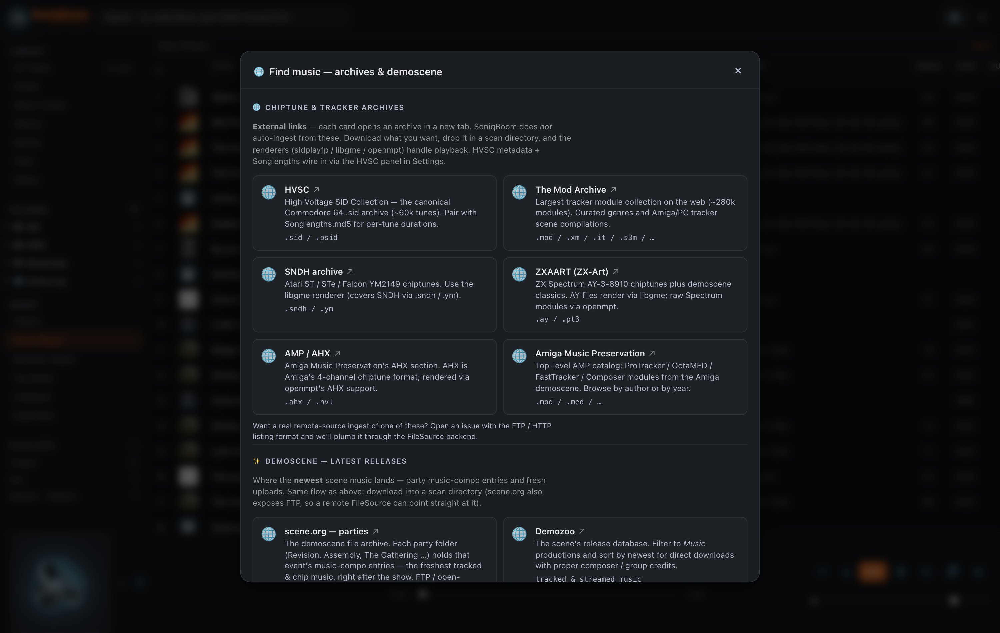
05Playlists
Hand-built collections that stick, and saved searches that keep themselves current.
Build a playlist by hand
Open the Playlists panel from the sidebar's Playlists section or the Playlists button in the player toolbar, then press + New to start one and name it. Add tracks three ways: select two or more rows in the library and click + Playlist in the bar that appears, or right-click a row and choose Add to playlist… — either drops them into an existing list or a brand-new one — or drag them straight into the panel. Inside a playlist a drag handle reorders tracks, and you can grab several at once to move them together. Delete a playlist whenever you're done with it.
Click a track in a playlist to play the playlist from there. ⌘/Ctrl-click and Shift-click select tracks, and Delete or Remove takes them out. An amber 2× marks a track that is in the playlist twice, and ⧉ the same song from another location. Each account's playlists are its own — other accounts don't see them unless you share them (below). Read-only accounts can make and change their own playlists too. To rename a playlist, long-press it on the phone page and choose ✎ Rename.
Share and import playlists
Open one of your playlists and press Share to make it available to every account on the server; a Shared badge marks it in the sidebar. To use someone else's shared playlist, press Import… in the Playlists panel and tick the playlists you want — they appear in your sidebar marked by and their owner's user name. An imported playlist follows the owner's changes and can't be edited by you: play it, queue it or Unsubscribe to remove it again (or untick it under Import…). When the owner stops sharing or deletes the playlist, it disappears for everyone who imported it. Read-only accounts can import shared playlists but not share their own. On the phone page, Import shared playlists… does the same. In Subsonic apps a shared playlist is a public one, and an imported one is listed with the playlists of your own.
Smart playlists — save a search
Any search can become a playlist that keeps itself up to date. Type a query — say
format:SID year:>1988 — and press ⚡ Save search, which appears next to the search box
while it holds text. Name it, and it appears under Playlists with a ⚡ marker. Opening it
re-runs the saved search — up to 500 matching tracks — so new tracks that match are included automatically;
a smart playlist can't be edited by hand. Smart playlists work in Subsonic apps too.
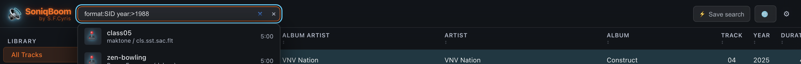
1988 typed and the Save search button visible in the header">06Internet radio
A hand-picked demoscene & chiptune station pack, plus the worldwide directory — HLS and classic streams alike, with live now-playing titles.
The sidebar's Stations section plays live internet radio. It has three lists:
- Favorites — your starred stations; each account has its own list (Subsonic apps see it too). Nectarine Demoscene Radio is there to start. A station you added by hand plays for everyone it is shared with — in a multi-room session, for example — but stays in your list only.
- Scene — a curated pack of demoscene, chiptune, SID and game-music stations: SceneSat Radio, Nectarine Demoscene Radio, SLAY Radio, Kohina, Radio PARALAX, CVGM.net, Rainwave Chiptunes, Rainwave Game Music, OverClocked ReMix Radio, Keygen-FM and CGM UK DemoScene.
- World — the worldwide Radio Browser directory, browsed by continent → country, then split into Top 10, Top 11–50 and Remaining by listener votes.
While a Stations list is open, the search box at the top reads Search stations… and searches the directory: matching Stations lead the search preview, ahead of your music, once you have typed two or more characters and paused. Show all → (or Enter) opens the full list of matches; Enter does so for whatever you typed, even a single character. Matches come from the Scene list, your Favorites and the Radio Browser directory, which is asked only from a Stations list; from anywhere else the search box searches your library alone.
Click a station to play it. In the web app SoniqBoom relays the stream through your server, so stations play
in the browser whatever they're built on — classic Icecast / SHOUTcast, modern HLS, or a
.pls / .m3u playlist that just points at the real stream; the phone page plays a station straight from the station's server when the
phone can, and through the relay otherwise. Playback starts at the highest quality your browser supports and steps down
automatically if the stream can't keep up; stations that offer several qualities appear once, under one
name. The player shows the station and the track that's on air (the phone page shows the station's name and
logo), and with an edit or admin account the
★ button adds it to Favorites or removes it.
Switch stations. While a station plays, the player bar shows ● LIVE and a scrolling now-playing line in place of the seek bar, and ◀◀ / ▶▶ switch to the previous / next station of the list you started it from — their names show beside the buttons.
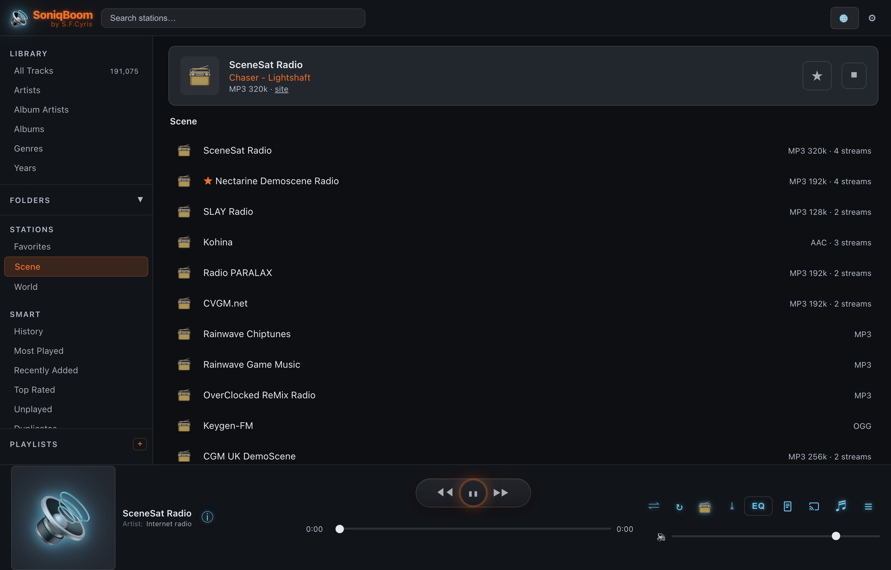
Live now-playing. In the web app, as each song changes, the current track's title appears in the player —
split into artist and song when the station provides it — read from classic ICY stream metadata
and the in-band metadata modern HLS streams carry. When a track is announced, SoniqBoom looks up
matching cover art and shows it in place of the station logo; if there's no confident match, the station's
own logo stays. It looks in your own library first, then on Discogs (only when a Discogs personal access
token is set as "discogs_token" in SoniqBoom.conf), then on MusicBrainz and the
Cover Art Archive, sending them the announced artist and title when your library has no match. To switch
the cover lookup off, set "radio_art_lookup": false in SoniqBoom.conf and restart
SoniqBoom. Community vote counts ride along, and playing a directory station reports the play to Radio
Browser (on the phone page, only when the station plays through the relay).
Station details. While a station plays, the ⓘ button in the player toolbar opens its details — tags, website, the live now-playing title, and every available stream with the one you're hearing marked.
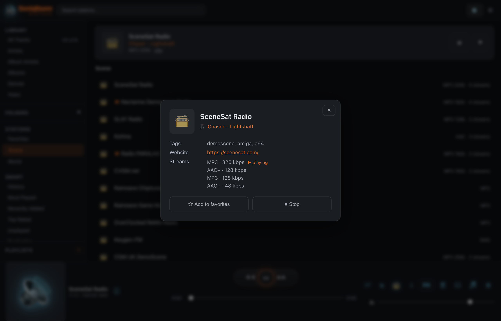
07Now playing
Double-click any track and it plays — even a 1987 SID tune or a 64-channel tracker module, rendered to audio on the fly.
Per-channel VU meters for tracker modules
Open any module and SoniqBoom shows a meter for each of its channels — up to 32 — dancing in real time, alongside the module's real metadata: channel and pattern counts, instrument names, and the embedded text messages trackers are famous for. A live signal path sketches how the playing track reaches your speakers — naming the renderer for SID, the classic tracker formats, HivelyTracker, AHX, MIDI, NSF, SPC and DSD files, and a decode step for other formats; it shows while the Now-playing visualizations are on.
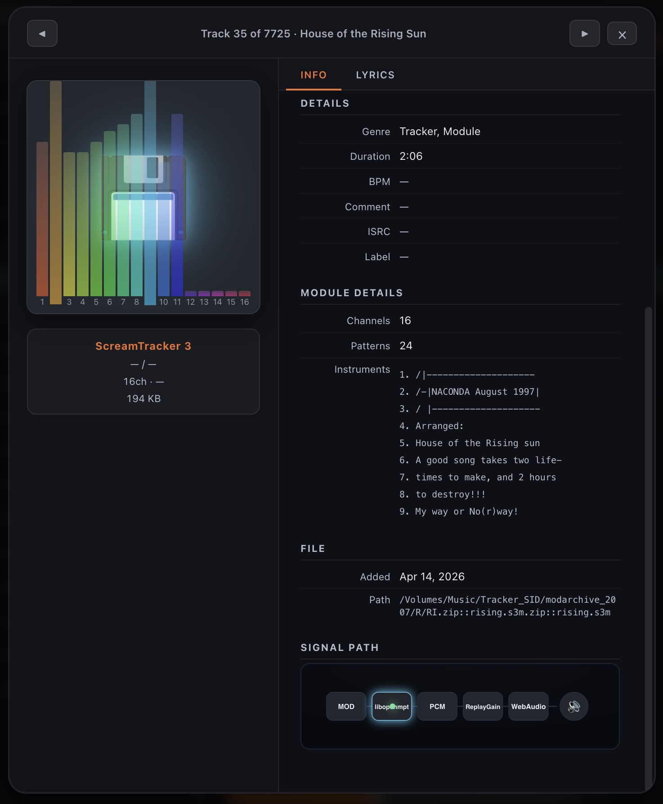
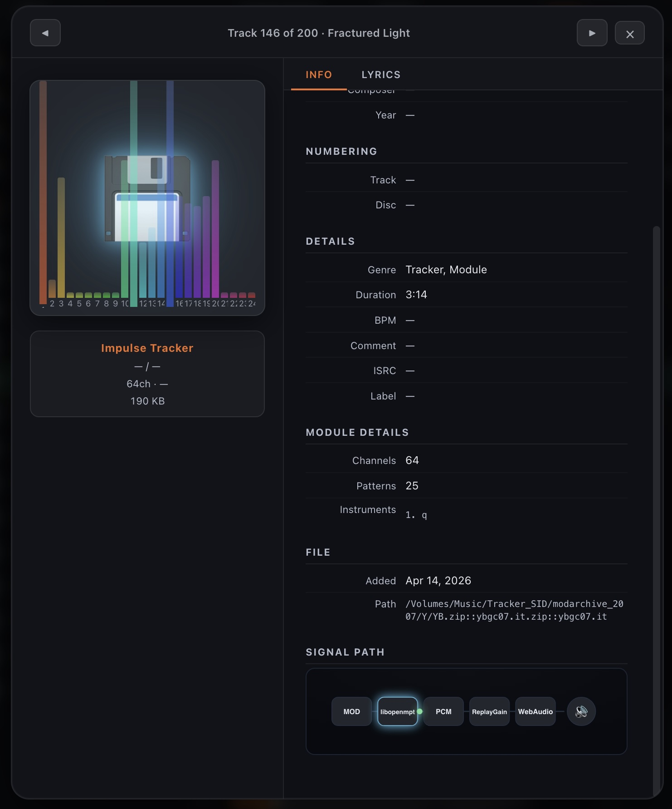
The pattern view — watch the module play
Track Info opens with the ⓘ button on the player bar, I or a click on the cover art (for the playing track), or Get info in a row's right-click menu; ◀ ▶ in its header (or ← / →) step through the list and Esc closes it. Open it on a tracker module and the panel leads with the module itself: channels, patterns, instruments — and a live pattern grid. Each pattern is laid out tracker-style — note · instrument · volume · effect — with the song's pattern order strip above it to jump anywhere. With Follow on, the playhead row tracks playback and the grid scrolls with the music, and every channel's column glows with its live level, in the same colour as its meter bar. Track Info shows only the fields a file actually has.
Modules that carry a song message — greets, release notes, ASCII art — show it exactly as written, spacing and all, and ▶ Scroller plays it as a demoscene scroller. A Made with row names the tracker software when the file records it, and BPM comes straight from the module's own tempo.
Multi-song files — the tune picker
A single SID, SNDH or SC68 file, an Amiga player-format module, or a console rip (NSF, NSFe, GBS, AY, SAP) often holds many separate tunes — a game's whole soundtrack in one file. Open Track Info on one and a tune picker lists every subsong: ▶ play (on the tune that's playing, pause and resume), + queue or ☰ add any one to a playlist, or Play all, Add all, ☰ Playlist and shuffle the whole set at once — and those single-tune picks live happily inside playlists alongside ordinary tracks. A file with more than 60 tunes lists the first 60, and Jump to reaches any tune by its number. In the desktop track lists and search preview, a file known to hold several tunes carries an N tunes badge. When a SID is part of the HVSC collection, each tune shows its real name and length from the Songlengths and STIL databases — so Tune 3 / 6 reads "Assembly" rather than a bare number — with the full STIL commentary below and the chip model shown as a 6581 / 8580 badge.
The song lengths and STIL come from gear → Renderers → HVSC SID database. Choose
Download from the internet and SoniqBoom downloads them from the 6581.nl HVSC mirror
(about 9 MB) and checks for a new HVSC release weekly — Check now checks at once, and the
card shows the date of the song-length list in use and when it was last checked. Or choose Local DOCUMENTS
folder and enter the HVSC DOCUMENTS folder on your computer. Either way your SID files are
matched by checksum, wherever they are in your library. Offline mode downloads nothing.
Playing the file itself starts at its default tune, marked default in the picker: the start song a SID or SNDH file names, and for Amiga player formats (played by UADE), console rips and SC68 disks the first tune that isn't empty (tracker modules start at tune 1); a tune you pick plays that tune. On the phone, Now Playing lists the playing file's tunes below the controls; tap one to play it, and its number follows the title. A tune that renders to silence shows “This tune plays only silence” instead of playing — in the web player, a very long C64 tune from its second play on.
Skip short tunes and broken tracks
Many SID, SNDH and console-rip files hold short sound-effect tunes next to the music, and collections hold short jingle modules. System → Settings → Skip short tunes (off by default; under 5, 10, 20 or 30 seconds) passes retro tunes that short by whenever a list or a tune list plays through — Play all, shuffle, the next track. Ordinary audio files (MP3, FLAC, …) are never skipped, and a tune you click still plays.
Only tunes with a known length count:
- a SID tune — from the HVSC Songlengths database;
- a tune of a multi-tune SNDH, NSFe or AY file — from the file itself;
- the tune a file plays by default — from its length before any fade-out: for a module, YM, PSF or MIDI file once it is scanned, for an Amiga, AHX, SC68 or AdLib tune once it has played or SoniqBoom has measured it in the background while it was shown in a list (Playback preparation).
The setting shows how many tunes have a known length and, without any, links to the HVSC folder setting. In the tune picker a short tune is dimmed and tagged short, the header counts how many are skipped, Add all and the playlist button leave them out, and a file whose tune lengths are unknown says so.
With the setting on, Subsonic apps such as Feishin list a multi-tune file without its short tunes in an album or folder — its own entry too when its default tune is short, as long as another tune is listed. A file all of whose tunes are short, and a single short file, stay listed. Refresh the album in the app after a change.
A track that doesn't play right can be reported. In Track Info, Playback offers
No problem, Glitched (plays, with wrong sounds) and Broken (doesn't play right), with an
optional note; the same choice is on a row's right-click menu, on the phone's long-press menu
(Report a problem…) and, when a track can't be played, on the message that says so
(Mark broken, when the file itself failed to play). Reporting needs edit rights; every user sees the
report — who made it, when, and which renderer and version played the track. Identical copies of a module,
chiptune or SID file are marked too, and a file that is removed and comes back unchanged keeps its report;
a changed file starts without one. A track marked
broken, and one no engine can decode (corrupt — such as a YM4 file, or a .ym file that isn't a YM register
dump), is passed by when a list plays through, while a click
still plays it: if it then plays, SoniqBoom offers to clear the mark.
A track whose player refuses it the same way twice in a row — for example an Amiga module on which uade stops with score crashed — is marked can't play by SoniqBoom itself. The message that says so names the player and the reason (“title can't be played here — the Amiga player (uade) stops on this file: score crashed”), with no Mark broken offer; the track is passed by when a list plays through, and a click tries it once more. Track Info shows the reason, the player and its version, and when it was found, with no signal path and no Playback choice (unless a listener reported the track, so the report can be cleared). The mark is taken off when the player or SoniqBoom is updated, when the file changes, and when the track plays after all. A failure that isn't about the file — a timeout, a track you skipped while it was being prepared, a player that was stopped, a download cut short, a full disk — never marks a track, nor does a player that refuses one file after another (its marks are taken off until it plays a track again); a report a listener made stays on the track beside the mark.
One badge per row shows the most
serious problem — red can't play / broken / corrupt / no tunes (passed by; no tunes is an
archive of an online collection with no tune in it, shown where a copy of it is still on screen), amber glitched /
partial (plays; a Sonix module whose instrument files are missing, which play as silence) — in track
lists, search results, playlists, the queue, Track Info and on the phone.
In the queue, rows that will be passed by are dimmed. Subsonic apps don't get tracks marked broken, tracks
that can't be decoded or played or files whose default tune is short in random songs, similar songs
(getSimilarSongs) or top songs; albums, folders, playlists, searches and the OpenSubsonic
sonic-similarity lists still list them.
The first time a track is passed by, a one-time message explains why. A Subsonic app that plays a track
marked can't play gets an error naming the reason. To leave tracks marked can't play,
corrupt or broken out of the lists altogether, set System → Settings → Tracks that
can't be played to Hide them.
Equalizer & visualizer
A built-in 10-band graphic equalizer (32 Hz–16 kHz, ±12 dB) shapes the sound band by band — toggle it with E or the EQ button, pick a preset (Flat, Bass Boost, Rock, Pop, Jazz, Classical, Vocal) or drag the bands by hand, and Reset to start over. Its Volume leveling menu evens out loudness with the ReplayGain tags in your files — Per album (the default), Per track or Off. A full-width visualizer plays behind the track list and cycles through its modes with V — oscilloscope, retro CRT scope, scrolling spectrogram, hyperspace tunnel, synthwave grid, wireframe globe, cosmic eye, lava lamp, and a singing raccoon. The visuals respect your system's reduce motion setting, pause when the tab is hidden, and stay off while Enable visualizations or Now-playing is switched off.
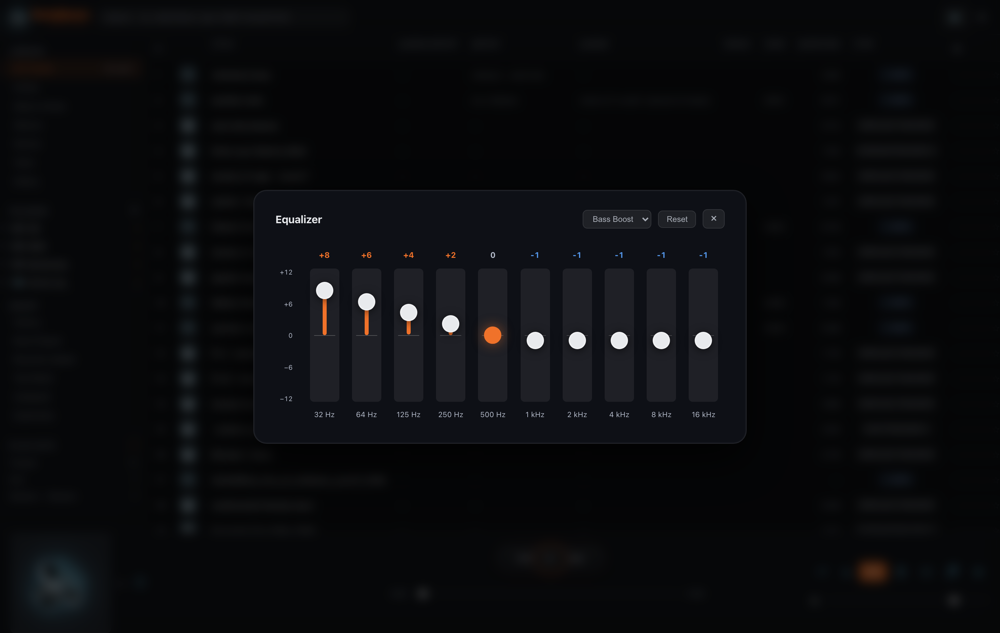
Player bar. The seek bar shows the track's waveform once it is known (for a retro tune, once it has rendered). Your keyboard's media keys, the lock screen and your system's media controls show the playing track and play, pause and skip, and while SoniqBoom is on screen the display stays awake as music plays.
Time-synced lyrics
Lyrics come from the file's own tags or, when it has none, from LRCLib or lyrics.ovh — the one that has been answering faster is asked first, the other only when it finds nothing; synced lyrics scroll line-by-line with playback. SID, tracker, chiptune, Amiga, Atari ST, PSF and AdLib tunes show only lyrics stored in the file — MIDI files are looked up online too. Open them with the Lyrics button in the player toolbar (a side panel — drag its edge to resize it) or the Lyrics tab of Track Info. With Save fetched lyrics to files (gear → Metadata → Lyrics, off by default) lyrics opened in SoniqBoom's own player by an edit or admin account are written into a local file that has none; a lookup from a Subsonic app or a read-only account never writes to a file.
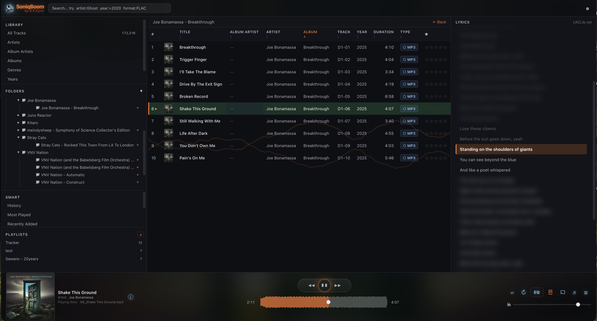
Podcast & audiobook chapters
For files that carry chapter marks — MP3 podcasts and .m4a audiobooks — open the
Track Info panel (the circled-i button) to see a numbered
Chapters list (for a file on a network share, once it has been played). Click any chapter to jump
straight to it.
About the artist & tag editing
The Track Info panel also shows an About the artist card — a short bio and
portrait, with a link to the full article — whenever the artist has one. The artist is matched
through MusicBrainz using the album and track you're viewing, and the bio comes from the matched
artist's Wikipedia page: "Ghost" on an Impera track is the Swedish band, not the apparition.
A retro track — SID, tracker, Amiga, Atari ST or PSF-family — shows a Scene tab in place of
Lyrics: the composer's Demozoo
profile (real name, groups, aliases and links), the release the tune comes from and more by the same
composer, plus the tune's Modland location and format. Its About the artist card then shows only a Wikipedia
article: the one the composer's Demozoo profile links, or, when Demozoo doesn't identify the composer, the
artist's Wikipedia page found as for other music.
Below it, ✏️ Edit tags opens an inline form for title, artist, album, album artist, game, genre
and year: Save tags writes the changes into the audio file itself (the game as a GAME tag) and
updates the library at the same time. This works on local MP3, FLAC, M4A, Ogg, Opus, WavPack and Musepack files
(in Docker, only once the music folder is mounted writable — remove :ro from its line in
docker-compose.yml); every
other track — network shares, archive members, modules and chip formats — gets ✏️ Edit info,
which changes the library only and also covers composer, label and comment; when a Demozoo year or one you
typed replaced the file's, ↺ Revert year to file brings it back. Saving either needs an edit or admin
account. The Game row shows the game the music belongs to: a retro
tune's game (usually the same name as its album, and an album you set is its game), with a note saying where it
came from, or the GAME tag of a remix. When the file header, Modland, Demozoo, the song database, the archive name or the folder name call
the game something else, those names follow on an also line (a name that is only the start of another
one is not repeated) — game: finds the track by any of them. The folder name counts only while Album from folder name for retro formats is on, a Modland
file-name guess only while Guess game from Modland file names is on, and the archive name only while
Game from archive names is on.
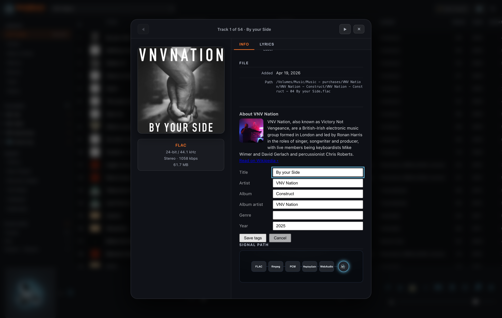
Scene origins
Retro module files rarely carry proper tags — but the scene has spent decades cataloguing them. In
gear → Metadata → Scene origin (Modland) SoniqBoom fingerprints each module and matches it against
the Modland index, filling in the original
author and adding a Scene origin row to Track Info that shows exactly where the tune sits in the
archive — Modland: <format>/<author>/…. Refresh the index and apply it from the same panel.
Chip-music files that store their game's name (SPC, NSF/NSFe, GBS, VGM/VGZ, and PSF-family rips such as PSF,
USF, GSF, 2SF or SSF) show it as the album and the game;
other music files (MP3, FLAC, M4A, Ogg, Opus …) can carry a GAME tag. To read them again — the chip-music files
whose game has not been read from the file yet, and every other music file's GAME tag — use
gear → Metadata → Game names from file tags → Read game names (the other details read from those
chip-music files, such as titles, are refreshed too); untick Include network shares to read only local
files. From an FTP or SMB share, an MP3, FLAC or M4A file is read only as far as
its tags where the file allows it (files inside archives are read whole), and Cancel stops
the run after the current file. A Modland
match also fills an empty album with the game the tune belongs to. With Guess game from Modland file
names (on by default), Amiga and tracker modules with an exact Modland match can take the game from the
Modland file name such as gold of the aztecs-intro when the track's title matches the part after
the dash and either other files in the same Modland folder share the game prefix, or the part starts with a
usual tune-part word such as intro, title, ingame, level or
gameover (an Amiga custom-format tune, whose title is its file name, needs other files in the
same Modland folder to share the game prefix). Such a game is spelled as the game title lists spell it when
they know it on the track's platform — backtothefuture3-intro gives “Back to the Future III”,
chuckrock 2 “Chuck Rock II” — and as the file name has it otherwise; these
guessed albums carry a small “guessed from Modland file name” note in Track Info. An album you typed is
never replaced. An album from the file itself is kept too, except that an exact Modland match completes an
SPC game name that the file's tag cut off at 32 characters. Turning the option off removes only the albums
it guessed.
In gear → Metadata → Song database (audacious-uade-tools), Download fetches the song database of the audacious-uade player (about 27 MB) from GitHub, always at the same reviewed commit (Validated set opens it on GitHub), and Apply to library matches your modules against it by checksum. If that commit is no longer available, the latest files are used and the status line marks them as not validated; the status line also notes when newer data exists upstream. An exact match fills what is still empty: the artist, the label (the publisher or group), the album (the game or production — it also replaces an album guessed from a folder or a Modland file name), the year and — for many Amiga modules not played yet — the length. A production name that several groups used carries the group, e.g. “Megademo (The Silents)”. While Re-apply automatically after each library scan is on (the default), a download and every scan apply it too. Reset enrichment removes the artists, labels, albums and years it filled and turns the automatic re-apply off; lengths stay. Tags in your files and anything you typed are never replaced, and a year from the database is marked in Track Info. The database is audacious-uade-tools by Matti Tiainen, compiled from about 400 scene sources and licensed CC BY-NC-SA 4.0.
Where a game's name comes from
A game you typed, or an album you set on a retro track, is always its game. Otherwise a retro track's game is the first name these sources give it, in this order:
- The file itself — the game in an SPC, NSF/NSFe, GBS, VGM/VGZ or PSF-family header, or a GAME tag.
- Modland — the game folder of the tune's exact Modland match.
- Demozoo — the game Demozoo lists the tune as the soundtrack of, when the tune's composer and title match and the tune is named after that game (“Rick Dangerous”, “High Technique (tune 3)”); from the Demozoo index under gear → Metadata (if its status line there says refresh the index to add game names, use Download / refresh index).
- The song database (audacious-uade-tools) — the game of an exact checksum match.
- A Modland file name such as
gold of the aztecs-intro, while Guess game from Modland file names is on — spelled as the game title lists spell it when they know it. - The archive's name, when it is the name of a known game of the track's platform, while Game from archive names is on.
- The folder or archive name, while Album from folder name for retro formats is on.
The names the other sources give are the game's other names: Track Info lists them on the also line,
and game: finds the track by any of them.
Game names from archive names
A retro track inside an archive takes the archive's name as its game when that name is a known game of the
track's platform — Turrican.lha for Amiga TFMX tunes, Super_Mario_World.zip for SNES SPC rips.
The name is compared with the game titles of the platform only: a SID with C64 games, an Amiga module with
Amiga games, a YM or SNDH tune or an Atari ST player's tune with Atari ST games, an AdLib or Sierra AGI tune
with DOS games, an SPC with SNES games, a PSF with PlayStation games, and so on; case, accents, punctuation, a
leading “The”, Roman numerals, dots between letters and region tags such as “(Europe)” are ignored, a name
written without the spaces a title has matches it (Megaman2.zip is “Mega Man 2”), and the
game is shown as the title list spells it. Skipped are generic names (music, intro, disk 1 …), names of a part of a game's music,
pure numbers, any name the archive's own tunes credit as their composer, artist, group, label or releaser,
and an archive that holds a single tracker module or SID named like it (such as axelf.mod.zip); the
next archive out is looked at instead. A one-word name shorter than eight letters needs two title lists of
the track's platform to agree, and a tracker module (MOD, XM, S3M, IT, MED, AHX …) needs a name of two or
more words that two lists of its platform agree on and that is not the title of a module in that
archive.
The option is in gear → Metadata → Game names from archive names (on by default); it applies
right away and after each scan, Track Info notes such a game as “from the archive name”, and turning it off
removes only the names it added. The game titles of Wikidata (CC0), No-Intro, the MAME software lists (CC0)
and ZXDB (ODbL) are included, and the C64 tunes in the GAMES folder of your own HVSC copy count
as C64 games. Download TOSEC (home computers such as the C64, Amiga, Atari ST, ZX Spectrum,
Amstrad CPC and MSX, about 100 MB) and Download Redump (disc consoles such as the
PlayStation, Saturn and Dreamcast, about 10 MB) add their titles; each is fetched only when you click
it, shows its progress, can be stopped with Stop and can be removed again. The downloaded
files are kept in SoniqBoom's data folder: after Remove, Add … from the downloaded
pack (or lists) puts the list back without downloading; Update
downloads the TOSEC pack only when tosecdev.org has a newer release (and uses the kept pack when the site
can't be reached), and says so when nothing changed; a Redump download that was stopped — or interrupted by
stopping SoniqBoom — is continued with Continue the Redump download, which fetches only the
systems still missing, while a stopped TOSEC download starts again; a Redump system that can't be reached
keeps the titles of its kept list, and the next Update that reaches every system clears the
note about it. A kept file that turns out to be damaged is removed (the next download fetches it again); one
that can't be read for another reason — a disk error, a missing permission — is kept.
Delete the downloaded pack (or lists) frees the space; the title list stays. Wikidata data is used under
CC0; ZXDB
contains information from ZXDB, made available under the
ODbL.
08Make it yours
Rate, queue and build playlists — and drive the whole player from the keyboard.
Ratings
Rate a track in the ★ column or with the stars in its right-click menu; click the current rating again to clear it (with a star focused, ← / → change it and Delete clears it). Each track has one rating, shared by every account, and changing it needs an edit or admin account. Ratings feed the Top Rated smart view.
Play queue
Toggle the queue with Q, reorder what's coming up, and queue tracks from any list. Your queue is also kept on the server, where Subsonic apps can resume it; when another device or app saved a newer queue, SoniqBoom offers to resume it when you open it — the offer also waits in the Queue panel until you play something, and a resumed queue shows its track and position in the player, ready for Play. Sync the play queue across devices (on by default; gear → System → Settings, or gear → Preferences for accounts without admin rights, and Settings on the mobile page) turns this off for one browser.
Playlists
Build and edit your own playlists from the sidebar — add single tracks, a selection of rows from any list or search result, or a file's tunes from Track Info.
Play queue & shuffle
Drag rows from any list onto the queue to add them, and drag a queued track's handle to move it (on a touch screen, press and hold first). Clear empties the queue — it asks first when five or more tracks are queued, and offers Undo for five seconds. The queue, its position and shuffle are kept when you reload the page. S or ⇌ shuffles the whole list the queue was started from, playing each track once before anything repeats; the tracks you've heard stay behind the current one for Previous. Turn on Let shuffle repeat tracks you've heard (gear → System → Settings, gear → Preferences, or Settings on the phone page; this browser only) and anything can come round again — it applies the next time you turn shuffle on. R or ↻ cycles repeat: off, all, one.
Keyboard shortcuts
Press ? (outside a text box) for a shortcut sheet inside the app; the ? button in the header opens the Welcome to SoniqBoom tips instead. ⌥ is Option / Alt.
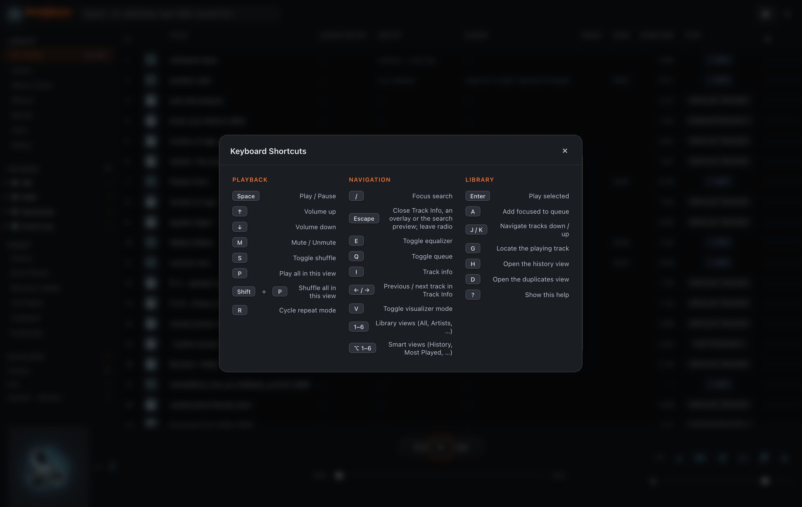
Playback
| Space | Play / pause | M | Mute / unmute |
| Media keys ⏮ / ⏭ | Previous / next | S | Shuffle |
| ↑ / ↓ | Volume up / down | R | Repeat (cycle) |
| Q | Toggle the queue | E | Equalizer |
| V | Cycle the visualizer | I | Track info |
| P | Play all in the current list | ShiftP | Shuffle all in the current list |
Browse & select
| J / K | Move down / up the track list | Enter | Play the focused track |
| A | Add the focused track to the queue | / | Focus the search box |
| ? | Show the shortcut sheet | G | Locate the playing track |
| Esc | Close Track Info, the shortcut sheet or Find music; leave the radio view | ← / → | Previous / next track in Track Info |
Jump to a view
| 1–6 | Library views — All Tracks, Artists, Album Artists, Albums, Genres, Years |
| ⌥1–6 | Smart views — History, Most Played, Recently Added, Top Rated, Unplayed, Duplicates |
| H · D | Quick keys for History · Duplicates |
09Every format, at a glance
Hundreds of formats through one render pipeline — from FLAC to the deepest corners of the Amiga scene. The reference addenda below tell each one's story.
| Family | Formats | Rendered by |
|---|---|---|
| Lossless / PCM | FLAC, ALAC (M4A), WAV, AIFF, WavPack | native / ffmpeg |
| Lossy | MP3, AAC, Ogg Vorbis, Opus, Musepack | native / ffmpeg |
| DSD (1-bit) | DSF, DFF, WSD | ffmpeg |
| SID (C64) | SID, PSID, RSID | sidplayfp + HVSC Songlengths & STIL (a .sid without a PSID/RSID header is Amiga SidMon: uade123) |
| MIDI | MID, MIDI | FluidSynth + SoundFonts |
| Tracker / module | MOD, S3M, XM, IT, MTM, MED, OCT, 669, DBM, ULT, STM, FAR, GDM, IMF, OKT, SFX, WOW, AMF, DSM | libopenmpt (MED 2–4 modules: zxtune123) |
| Amiga (Hively / AHX) | AHX, HivelyTracker (HVL) | AHX: uade123, stopping where the song ends · HVL: the bundled HivelyTracker engine, which also measures AHX song ends (outside Docker it is built on first play and needs a C compiler) |
| Amiga exotica (UADE) | ~175 custom players — TFMX, Future Composer, Jochen Hippel, SidMon, SoundMon, SoundFactory, David Whittaker, Delta Music, plus ~110 ProWizard-packed formats … | uade123 |
| Atari ST | SNDH, YM, SC68 | psgplay / bundled StSound engine (outside Docker it is built on first play and needs a C++ compiler) / sc68 |
| Console rips (PSF family) | PSF, PSF2, USF, GSF, 2SF, SSF, DSF (Dreamcast), NCSF and their mini variants (MiniPSF, MiniUSF …) | zxtune123 (a .psf without a PSF header is Amiga SoundFactory: uade123) |
| Console chiptune | NSF, NSFe, SPC, GBS, VGM, VGZ, AY, KSS, SAP, GYM (packed GYMX too), HES | libgme (VGM/VGZ using a chip other than the Sega PSG and YM2612 — YM2413, YM2151, NES APU, AY-3-8910 …: zxtune123) |
| AdLib / OPL FM | id IMF, ROL, CMF, D00, RAD, LAA, SCI, DRO, HSC, RIX, A2M, ADL, BAM, KSM, AMD | AdPlug (adplay, Nuked OPL3) |
A .imf file is played by what it holds: an Imago Orpheus tracker module through libopenmpt,
id Software and Apogee game music (Wolfenstein 3D, Commander Keen …) through AdPlug. Amiga player formats
are recognised by the Amiga naming (mdat.song, fc13.intro) as well as by a file
extension (song.fc13). A module packed with XPK SQSH is unpacked before it plays, and the files a
format needs beside it — a TFMX smpl. file, instrument files, a Sonix Instruments
folder — are taken from the same folder or archive.
How long a retro tune plays. A console chiptune that states its length (an SPC's ID666 tag,
NSFe, a tagged rip, a VGM's intro and two loops) plays that long and then fades out over 8 seconds; one
that states none plays the SID duration set under System → Settings and fades over its
last 8 seconds. A PSF-family rip plays the length in its tags and fades over its fade tag; a rip whose
library file (_lib) is missing says which file it needs. An SNDH tune plays the length the file
states, or 3 minutes when it states none.
Archives and disk images are scanned and played inline — tracks inside .zip files
(a ZIP inside a ZIP too), Amiga .lha / .lzh archives, C64 .d64 /
.d71 / .d81 disk images and Amiga .adf disks appear in your library
without unpacking (on network shares: ZIP and LHA/LZH archives). The Scan ZIPs settings switch
this on and off. (Where the lha tool from lhasa isn't installed — always the case in the Docker
image — LHA archives packed with methods other than -lh0-, -lh5-, -lh6-
and -lh7-, such as the older -lh1- and -lh4-, are not read.)
What your browser gets. MP3, FLAC, WAV, Ogg, Opus and AAC files stream to the browser as they are. Apple Lossless (ALAC) plays as it is in Safari and is converted for other browsers; Safari before version 18.4 gets Ogg and Opus files converted. Conversions — ALAC, AIFF, WavPack, Musepack, DSD — start playing almost at once while the rest converts, and are kept in the conversion cache for the next play. If the browser can't decode a file — a damaged MP3 or FLAC, for example — SoniqBoom plays it again through ffmpeg, and keeps doing so for that track in this browser.
.dsf, .dff, .wsd)
play in any browser — SoniqBoom converts them on the fly to 24-bit PCM at up to 96 kHz, and the library
tags each one by rate (DSD64, DSD128, DSD256, DSD512). High-resolution
PCM — 24-bit FLAC, WAV and the like — streams to the browser without re-encoding.10Casting Beta
Send what you're playing to a TV, speaker or receiver on your network.
pychromecast, pyatv or async-upnp-client (not included in the Docker image).- Press the cast button in the player toolbar.
- Pick a device from the list — discovered Chromecast, Apple TV / HomePod (AirPlay), and DLNA receivers appear together.
- Playback moves to that device. SID, MIDI, tracker modules, AHX, HivelyTracker and console chiptunes (NSF, SPC, VGM …) are rendered to standard audio first, so they cast like any FLAC. AdLib, Atari ST, PSF-family and other Amiga player formats are not rendered for casting.
- Some AirPlay devices show a PIN the first time you connect — type it into the pairing dialog to authorise SoniqBoom. The pairing is remembered, so the PIN isn't asked for again.
- Open Audio quality in the picker to choose: Auto (the file as it is when the device plays it, otherwise lossless when the device supports it, otherwise MP3 320) or MP3 320 (smallest bandwidth, widest compatibility). The picker also lists Original and FLAC; these choose the format the same way as Auto. The picker on the phone page offers Auto and MP3 320.
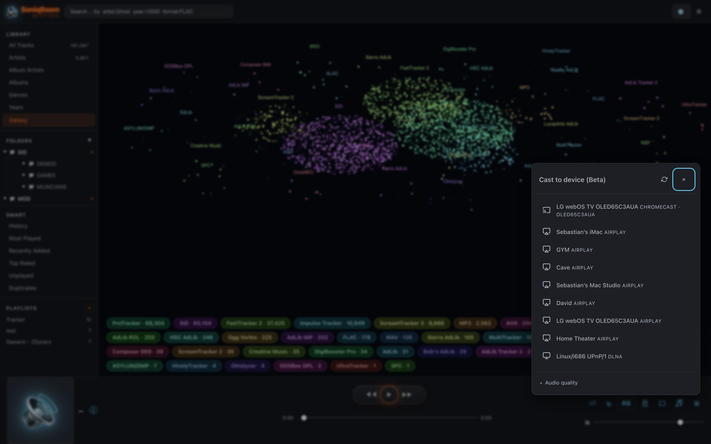
11Multi-room sync
Play the same music in step across the devices on your network — one device leads, the rest follow in lockstep.
SoniqBoom has a dedicated multi-room controller. Open it at /multiroom on your server — for
example http://localhost:8080/multiroom, or your server's own address. One device becomes the
master and drives playback; every other device joins as a listener and stays
in sync.
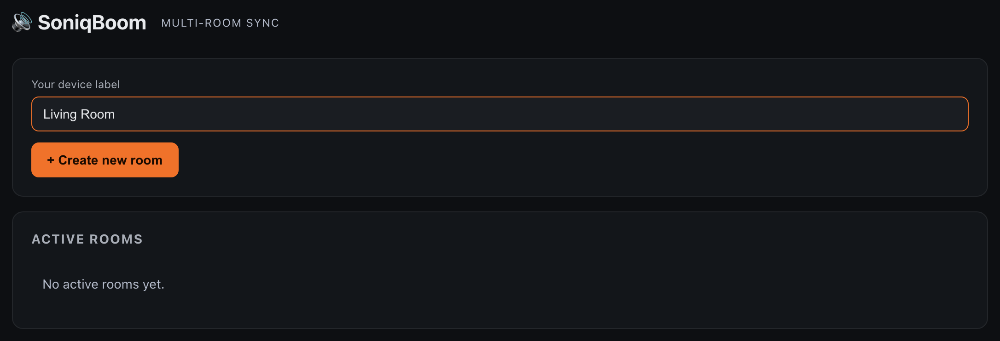
/multiroom — name your device, then create or join a room.Start a room — the master
- Open
/multiroomin a browser on the device that will lead. - Type a device label (for example Kitchen speaker).
- Click + Create new room, give the room a name, then Create & become master.
- As master you browse Tracks, Playlists and Albums, search, and control playback — play/pause, next/previous, shuffle and repeat; Up next shows the room's queue. The queue passes by the same tracks the main player does — offline, reported broken or undecodable, and short tunes while Skip short tunes is on. The Listeners panel shows every device that has joined.
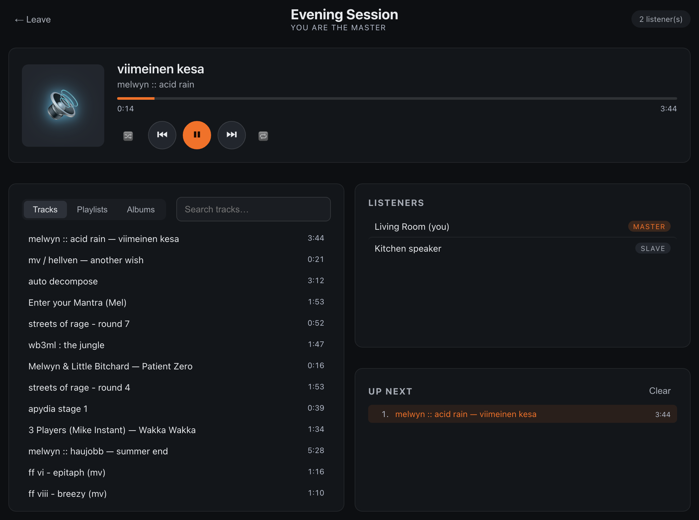
Join a room — a listener
- Open
/multiroomon another device and type a device label. - Pick the room under Active rooms — you join as a listener and follow the master in sync, with a live sync-drift meter on screen.
- Press ← Leave to drop out. When the master leaves, listeners see Master left the room with a Become master button; a device that opens a room with no master becomes its master.
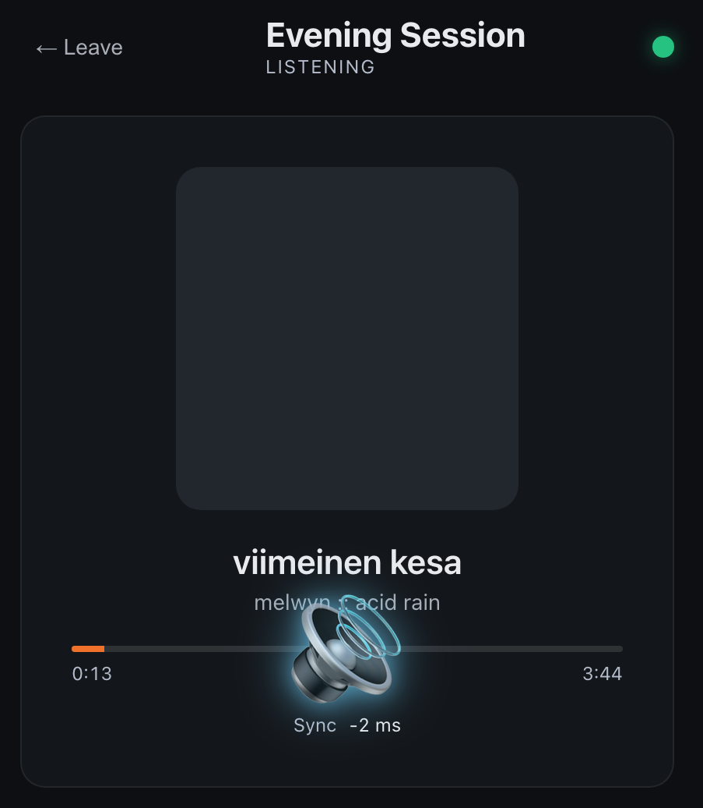
Stream a station to a room
A room isn't only for your own library. Open the master's 📻 Radio tab, pick any of your favourite internet-radio stations, and it plays to every device in the room at once. The now-playing card shows the station and its live artist and track as they change, right alongside the room's transport and Listeners panel.
12Listen anywhere
Subsonic apps
SoniqBoom speaks the OpenSubsonic API. Point Amperfy, Symfonium, DSub or Feishin at your server's address and sign in with your SoniqBoom username and password — apps that sign in with a token work with it too — or with a Subsonic app password or an OpenSubsonic API key from Settings. Subsonic apps that run in a web browser, such as Airsonic-refix or Feishin's web version, can connect from another address with the same server URL and sign-in.
Installable PWA
Add SoniqBoom to your home screen or dock for a full-screen, app-like experience.
On your phone
Open SoniqBoom on a phone and it takes you to the dedicated touch-first page at
/m (an iPad gets the desktop UI, which also works at phone width), with Library, Search,
Radio, Queue and Now Playing tabs plus a tap-to-expand mini-player and Settings behind the
gear. Library browses All, Artists, Album Artists, Albums, Genres, Years and Playlists;
Radio has ★ Favorites, Scene and Browse; Search shows how many tracks match and
loads more of them as you scroll. Tap a track to play it, swipe it left to add it to the
queue (in the queue and in a playlist, to remove it), and long-press it for ▶ Play Now,
+ Add to Queue, ♫ Add to Playlist… and, with edit rights, ⚠︎ Report a problem….
Long-press a playlist to ✎ Rename or 🗑 Delete it. Tune in internet radio
streamed straight to your phone, and sign in right on the phone. The Desktop site
link switches that browser to the full desktop UI and keeps it there; open /?ui=mobile to
switch that browser back to the phone page (opening /m shows it without changing which page / opens). Casting is reachable from the
mobile mini-player too (Beta).
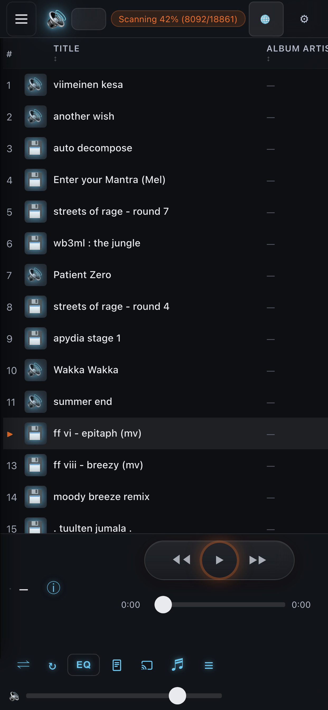
Take it offline
In the desktop player, press the ⤓ download button in the player toolbar to keep the current track in
this browser — it then plays from that copy, also while the connection to the server is lost, as long as
the page you opened while connected stays open (a page loaded with no connection only shows that the
server can't be reached). Saving works when the browser reaches SoniqBoom over HTTPS or on
localhost; over plain http:// to another address it says offline storage isn't
available. For a file with several tunes, the copy is of its default tune. The button lights up on tracks
you've downloaded; press it again to remove the copy. Everything else streams exactly as before. (The phone page has
no download button.)
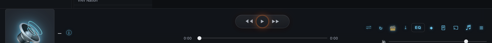
Multi-user accounts and roles, last.fm and ListenBrainz scrobbling, and a light/dark theme are all built in — see Manage your library & users and Settings.
13Manage your library & users
Add network shares, keep the index fresh, back up your data, and decide who can do what — all from the admin panel (gear icon, top-right).
Add a network share — FTP, SMB or WebDAV
In the admin panel's Music Folders section, switch from Local Path to the Network Share tab and pick a protocol:
| Protocol | You enter |
|---|---|
| SMB | Host, share name and path — with a username and password, or tick Guest access. |
| FTP | Host and remote path — with a username and password, or tick Anonymous. |
| WebDAV (http / https) | A base URL — the server itself (https://dav.example.com) or a folder on it (https://cloud.example.com/remote.php/dav/files/USERNAME/Music) — with a username and password, or tick Public (no auth). |
Add an optional alias, click Test to check the connection, then + Connect — SoniqBoom attaches the share with no operating-system mount required and scans it straight away. When the connection fails, the message says why (for example a wrong password or a URL that is not a WebDAV folder). When a server refuses a share's sign-in, SoniqBoom waits before trying that login again (from 5 minutes up to 6 hours) and the share's row says so; Reconnect tries at once.
Tracks on a share start playing while they download: an MP3, WAV, Ogg or Opus file, or a FLAC with a seek table, plays from its first bytes, and a seek far ahead of what has arrived can be read straight from the share. A track inside a large ZIP archive on a share is read on its own, without downloading the whole archive. A share whose server is offline when SoniqBoom starts is marked unavailable and connects by itself once the server is reachable again. While a drive or share is not connected, its tracks stay in the library and are marked offline in lists (see Library display under Settings & integrations). A track on a share whose file is already in SoniqBoom's cache still plays; a track on a local drive plays again once the drive is back.
To take a source out of the library, use its row's Disconnect button (a share) or Remove (a local folder): after you confirm, its tracks are deleted from the library index — the files themselves are left alone. The Scan ZIPs box on the Local Path row is the same switch as Scan ZIPs in System → Settings.
With an FTP share connected, the Library tab adds FTP Connection Pools: for each FTP server, set how many connections scans (Scan workers) and playback (Stream workers) may use, and Save. A play always goes ahead of a scan. When the server allows fewer connections, SoniqBoom keeps to its limit; Test now measures that limit and Reset detected forgets it.
Online collections
The admin panel's Collections tab adds public music archives to your library without copying them: each one is listed from the archive's own index (scene.org from its folders), as a folder of its own in the folder tree, browsable and searchable at once, and a tune is downloaded only when you play it (or open its Track Info). Every collection is off until you switch it on.
Aminet and scene.org keep most of their music in archives (LHA or ZIP) — one module, or a whole music disk. Such an archive is listed as one entry, its format shown as LHA package or ZIP package. When you play it or open its Track Info, the archive is downloaded (a large ZIP only in part) and the tunes inside it take its place in the folder: the first one keeps the entry's place in your queue and playlists, and the others follow it in the queue. Tunes on an Amiga or C64 disk image inside the archive are listed too. An archive that holds nothing SoniqBoom plays leaves the library as soon as that is known: playing it (or opening its Track Info) says what it holds instead — an Amiga or PC program, a disk image or archive in a format SoniqBoom doesn't open — and its playlist entries are kept. An archive that can't be opened is marked corrupt.
Modland
Switch on Modland catalogue and SoniqBoom downloads the index of Modland's module archive (about 6 MB) and lists the tunes it can play — about 330,000 tunes of Amiga, C64, Atari ST, console and tracker music — under a Modland folder in the folder tree. Switched on again later, it updates a recent index it kept instead of downloading it again. The status line shows the progress while it is built and then the number of tunes, the date of the index and when it was last refreshed.
- The folders follow Modland's own layout: format, composer, and for console rips the game. Each tune shows its title (the file name), its composer, its format, the game it belongs to where Modland's folders or file name say so, and its retro genres — browsable, searchable and playable right away. Its length shows once it has been played.
- Nothing is copied ahead of time: a tune is downloaded from Modland when you play it or open its Track Info (for tracker, SID, Amiga, Atari ST, PSF-family and multi-tune console chiptune files), together with the files its format needs beside it (a TFMX tune's sample file, a PSF rip's library files), and plays from SoniqBoom's remote cache while it is kept there (its size is Remote cache (MB) under System → Settings). That first download reads the file itself — its length, number of tunes, its own title and tags, including the composer the file names (Modland's credit names one where the file doesn't); an open page shows them at once. With Modland's checksum list installed (gear → Metadata → Scene origin (Modland)), Amiga modules show how many tunes they hold before that when the song database is installed too, and HVSC SIDs when your HVSC copy is set up. The player also prepares the one track that plays next, and a Chromecast (casting is in Beta) loads the next tune of its queue shortly before it starts. Folder views, searches, artwork, waveforms, VU meters and background passes never download a catalogue tune on their own (except with For tunes shown in lists, below). At most 120 new tunes are downloaded within ten minutes; a play beyond that says to try again shortly.
- Tunes: Everything except the large PC tracker folders (the default) leaves out Fasttracker 2, Impulsetracker, Screamtracker 3, Fasttracker and Multitracker; Everything lists about 415,000 tunes.
- Show catalogue tunes to Subsonic apps is off by default: Subsonic apps and the DLNA Media Server Beta then see your library without the catalogue, and a catalogue tune answers “not found” to them. Switched on, an app that syncs or caches a whole library for offline use tries to download the whole catalogue from Modland.
- Read details of tunes not played yet: When I open Track Info (the default) downloads a tune's file when you open its Track Info. For tunes shown in lists also downloads, one at a time, the SC68, SNDH and console chiptune files (NSF, NSFe, GBS, HES, KSS, AY, SAP) shown in a list that haven't been read yet, so their length and tags show as you browse — and, for SC68, SNDH, NSF, NSFe, GBS, AY and SAP files, their number of tunes. These downloads have their own limit, which always leaves room for plays. Amiga modules and HVSC SIDs show their number of tunes either way when Modland's checksum list is installed (with the song database for Amiga modules, and your HVSC copy for SIDs).
- The index is refreshed on the schedule picked in the menu right of Refresh now — Daily (the default), Weekly, Every 2 weeks or Monthly, counted from the last successful refresh — or at once with Refresh now; the status line shows when the next refresh is due. Tunes Modland added appear, removed ones go, a tune Modland moved or renamed keeps its ratings, play counts, favourites, history and playlist entries, and a changed file is downloaded again on its next play.
- A refresh downloads only the changes since the last one — Modland's daily changelogs, usually a few kilobytes in all. The full index (about 6 MB) is downloaded only when needed: the first time the catalogue is switched on, after a large reorganisation at Modland, when the changelogs can't be read or don't add up to Modland's own file count, after about six weeks without an update, and about once a month as a check. The status line says what the last update downloaded (“updated from 3 changelogs (2.1 KB)”, or “full index (5.5 MB: …)” with the reason), up to which day the index holds Modland's changes, and how much the index updates have downloaded in all.
- A failed or incomplete download keeps the catalogue as it was and is tried again an hour later (an index that doesn't look like Modland's, a day later), whatever the schedule; a new index that lists far fewer files than the current one is taken only when you press Refresh now after the status line reports it.
- When Modland can't be reached, tunes played before still play from the cache; the others report that Modland can't be reached right now and count as unavailable under Tracks on unavailable drives (see Library display under Settings & integrations) — marked offline by default, or left out of searches and lists with Hide them. The Modland folder shows offline for a while and stays browsable; the next play after that tries Modland again.
- Switching the catalogue off removes its tunes and the Modland folder. Ratings, play counts, favourites, playlist entries and what the plays read (lengths, tags) are kept and come back when you switch it on again; a playlist edited meanwhile keeps its catalogue entries. The same holds for the tunes a narrower Tunes selection leaves out.
- In Recently Added and Unplayed, and in Subsonic apps' lists of newest albums, the tunes of the first build — and those a wider Tunes selection adds later — sort as the oldest; tunes added by a later refresh show the day that refresh added them.
- The catalogue needs about 1 GB of server memory (about 1.2 GB with Everything).
HVSC
Switch on Show HVSC in the library and SoniqBoom lists the High Voltage SID Collection — every Commodore 64 SID tune, over 60,000 of them — under an HVSC folder that follows HVSC's own layout (MUSICIANS, GAMES, DEMOS). Its index is HVSC's own song-length list (about 5 MB) with the STIL comments beside it (about 4 MB), so every tune shows its number of tunes, the length of each one and its STIL comment before it is ever played — Skip short tunes works on them at once. A tune is downloaded from 6581.nl when you play it or open its Track Info, and that first download reads the file's own title, composer and chip. Until then a tune in a composer's folder (MUSICIANS) shows its composer as the folder names them (Hubbard Rob), and a tune in GAMES or DEMOS shows none. Once a tune of a composer's folder has played and its file names that composer, the folder's other tunes show the name the file gives (Rob Hubbard, Stephen L. Judd (Wyndex)).
- Leave Modland's HVSC folder out (on by default): Modland carries a copy of HVSC too. While this is on, the Modland catalogue leaves its HVSC folder out. A tune's rating, play count, history and playlist entries move to the copy that is in your library — from Modland's HVSC folder to this collection, and back when this collection is switched off while Modland's folder is in. A tune rated or played on both copies keeps each copy's own rating and play count; its playlist entries still move.
- Use its song lengths and STIL for my own SID files (on by default): when no HVSC folder of your own is in use (gear → Renderers → HVSC), the downloaded song lengths and STIL comments serve your own SID files too — matched by checksum, so a SID filed anywhere in your library finds its lengths and its STIL comment. An HVSC folder of your own always takes precedence. With Download from the internet chosen on the HVSC card too, the collection's own index check keeps those files up to date and the card downloads nothing itself.
- The index is checked weekly by default (daily, every 2 weeks or monthly, or on demand with Refresh now); a check downloads it again only when HVSC has changed. Switching HVSC off removes its tunes and folder; ratings, play counts and playlist entries are kept for when you switch it on again.
- Subsonic apps and the DLNA Media Server (Beta) don't see the collection unless you switch that on.
Aminet
Switch on Show Aminet in the library and SoniqBoom lists the music section of
Aminet, the Amiga software archive — about
20,000 uploads of Amiga modules, module sets and MP3s — under an Aminet folder with one
subfolder per Aminet category (techn, demo, 4mat …). Its index is Aminet's own list
of uploads (about 7 MB); the sample and instrument categories are left out. MPEG audio uploads
(.mpg) are listed as MPEG audio: they play converted on their first play, and as MP3 from
then on when they are MP3.
- An upload is listed with its name, Aminet's one-line description as its comment, the category's style as its genre (techn → Techno, chip → Chiptune …) and as its artist the composer the description names (… by Skope, … by Cyborg/Crazy — composer and group) or, in a composer's category (Mods by 4mat), that composer.
- Played or opened in Track Info, an upload is downloaded with its
.readme: the composer it names (Author, without e-mail or web addresses) becomes the artist of the tunes inside, its short description their comment, a set's tunes share the upload's name as their album, and each tune's own title and length are read from the file. In the collection categories (sets, funet, boing, chart, rated, wmr) an upload holding several tunes takes the composer its description names (14 Ron Klaren modules), not its readme's Author; an upload in a party's category (tp96) takes its readme's Author. - The index is checked weekly by default (daily, every 2 weeks or monthly, or on demand with Refresh now); a check downloads it again only when Aminet has changed. An upload Aminet replaces under the same name — told by its size or its upload date — is listed as one entry again and downloaded anew when it is next played.
- Subsonic apps and the DLNA Media Server (Beta) don't see the collection unless you switch that on.
scene.org
Switch on Show scene.org in the library and SoniqBoom lists the music archive of scene.org — the artists, groups, compos, disks and compilations folders — under a scene.org folder that follows its layout. scene.org has no index file, so SoniqBoom reads its folder listings one at a time: the first listing takes a while (the status line counts the folders), later ones read only the folders that can have changed.
- The folders name the tunes: a file in artists/<name> has that composer as its artist, one in groups/<name> that group, and a compo or music-disk folder gives its tunes their album.
- Archives (ZIP, LHA) and files SoniqBoom plays are listed; other files (RAR archives, text files) are not. A large ZIP — a music disk or a compilation — is opened by reading only its list of contents, and only the tune that plays is downloaded from it.
- A large file (over 8 MB) the browser plays — an MP3, WAV, Ogg or Opus file, or a FLAC with a seek table — starts playing while it downloads. One over 48 MB plays as it is, straight from the archive, and is not kept in SoniqBoom's cache: only what you listen to is downloaded. Track Info reads only its start and end for its tags and length, and the next-track preparation skips it. A tune over 48 MB inside a ZIP archive is downloaded only when it plays. Nothing larger than half the Remote cache (MB) under System → Settings is downloaded: such a file plays only as it is, straight from the archive — not converted for a browser, a Subsonic app or a Cast device — and a tune that large inside an archive (or an LHA archive that large) doesn't play.
- The listing is checked monthly by default (daily, weekly or every 2 weeks, or on demand with Refresh now).
- Subsonic apps and the DLNA Media Server (Beta) don't see the collection unless you switch that on.
Keep your library fresh
Local folders are watched automatically — files you add, change or remove are picked up a few
seconds after the changes settle, and a file that is still being copied or downloaded is picked up once it is
complete. Changes made while SoniqBoom was stopped are picked up by a rescan of the local folders a few minutes
after it starts (Rescan local folders after startup in Settings). A local folder that can't be
watched (for example on Linux when the system's limit on watched folders, fs.inotify.max_user_watches,
is reached) shows Not watched in the Library tab's folder list, with the reason below it: it is
rescanned every 15 minutes, and watching it is tried again automatically. A folder that is watched except for some of its subfolders
(the limit was reached while a folder was moved or copied into it) shows Partly watched: it is
rescanned every 15 minutes too, and the missing subfolders are added automatically once the limit allows.
Network shares are re-checked
on a background poll that adapts to each share — every 5 minutes for one that changes often, up to every
4 hours for a stable one. A check finds files added, removed or renamed in any folder of the share (in a share
with many levels of folders, within a few checks); a file rewritten under the same name in a large share
can wait for the next full check (every fifth check, and any check more than 3 hours after the last full
one). The Library tab's Auto-Refresh (Remote Shares) section lists each
share with when it was last checked and when it will be checked next; its Check now button
checks at once, and a notice appears only when new tracks are found. To rebuild everything by hand, use
↻ Rebuild Index; to re-scan a single folder, use its Re-Index button.
While a scan is running you can Pause it and later Resume from where it left
off — handy for easing server load during busy listening.
The Library tab's Library Health cards show how many tracks and scan folders are indexed and
whether the search index is in order. If titles, artists or albums show the replacement character
�, or modules show a placeholder title such as <unnamed>,
Repair Garbled Metadata reads them again from the files (a placeholder title becomes the
file name):
Scan for Garbled Titles counts them, Repair Now fixes them (Only tracker /
chiptune files keeps it quick).
Back up & restore
The admin panel's Backup tab exports your whole database to a single date-stamped file
(soniqboom-YYYY-MM-DD.sbz) — a compressed snapshot of your track index and metadata, waveforms,
star ratings, every account's play counts, listening history, playlists and radio Favorites, your scan-folder
list and library settings. On restore, each account's data goes to the account with the same user name; data
of a user name with no account on the server is kept aside and joins the account an admin later creates with
that name (never one a visitor signs up for).
↑ Import .sbz restores such a file into the running server: it replaces the library index, and
changes made since the export are lost. When it is done, the tab shows Import complete with the number of
tracks restored.
On the server (from inside the SoniqBoom folder), .venv/bin/soniqboom export backup.sbz writes the
same file. To restore one, stop SoniqBoom, run .venv/bin/soniqboom import backup.sbz, and start SoniqBoom again
(the import refuses to run while the server is using the data folder). The import replaces the library index;
changes made since the export are lost. In Docker, from the folder with docker-compose.yml
and the .sbz copied there (for the HTTPS setup, add the same -p and -f you use for that setup — e.g.
-p soniqboom -f deploy/docker-compose.https.yml — to every command):
docker compose stop
docker compose run --rm -v "${PWD}:/backup:ro" soniqboom soniqboom import /backup/soniqboom-2026-10-01.sbz
docker compose start
With the server stopped, docker compose run --rm -v "${PWD}:/backup" soniqboom soniqboom export /backup/soniqboom.sbz
writes a backup the same way. In Docker, back up the whole soniqboom-data volume
(/data) as well; the caches in /data/cache/remote, /data/zip-extracts and
/data/soniqboom/cache can be skipped. The same tab shows the Last known-good snapshot — an automatic copy of the library index
(library.json.prev in the data folder), refreshed each time the server starts and the index loads
cleanly. If the live index is ever damaged, stop SoniqBoom, copy library.json.prev over
library.json in the data folder, and start it again. Recent changes are kept in library.aof
beside it until they are folded into the index, and are applied at the next start; if that file may be damaged
too, delete it as well — those changes are then lost.
The library database carries a version number (Database V2 in gear → System → About). When a new
SoniqBoom release finds a database of an older version, it first copies the files into
backups/db-v1-<date-time>/ in the data folder — with a README.txt explaining how to go back —
and only then converts them; a backup that can't be made (too little disk space, for example) stops the start
with a message, and nothing is converted. Those copies are kept until you delete them. A database written by a
newer release than the one starting is refused rather than opened.
users.json, subsonic_state.json and secret.key),
not in the .sbz — back up that whole folder too, keeping those files together, along with your music.
It is ~/Library/Application Support/SoniqBoom on macOS, ~/.local/share/soniqboom on
Linux (or $XDG_DATA_HOME/soniqboom), /data in Docker, or the data_dir /
SONIQBOOM_DATA_DIR you set. Back up SoniqBoom.conf and prefs.json as well —
your network shares, folder aliases, services and other admin settings. They stay in the macOS / Linux folder
above even when you set a different data folder (SoniqBoom.conf is wherever
SONIQBOOM_CONF points, if you set it); in Docker they are in /data/soniqboom on the volume.
On a native install, share passwords and scrobble tokens only work on the machine that saved them: after moving to
another machine, enter them again. In Docker they are encrypted with the key in /data/credential.key;
keep that file with the rest of /data.User accounts & roles
Manage people in the admin panel's Users tab — add a user, set their role, enable or disable them, set a password, or remove them. You can't remove your own account, or demote or disable it while it is the only enabled admin. Removing a user also removes their API keys, listening history and play counts, favourite stations, playlists (a shared one disappears for everyone who imported it), and their Subsonic app favourites, album and artist ratings, saved play queue and bookmarks. Admins don't see other accounts' history, play counts, favourites or private playlists. Three roles decide what each person can do:
| Capability | Read-only | Edit | Admin |
|---|---|---|---|
| Browse & play the whole library, keep your own play history | ✓ | ✓ | ✓ |
| Your own radio Favorites, playlists, and importing shared playlists | ✓ | ✓ | ✓ |
| Share your playlists with every account | — | ✓ | ✓ |
| Rate tracks (ratings are shared by every account) | — | ✓ | ✓ |
| Edit tags & track info, report broken or glitched tracks | — | ✓ | ✓ |
| Download original files in Subsonic apps | — | ✓ | ✓ |
| Manage users, folders, settings & backups | — | — | ✓ |
New accounts come from two places: an admin adds them in the Users tab with a role, or a visitor signs themselves up from the login screen — self-registered accounts are always Read-only until an admin promotes them. Under gear → Users → Sign-up & passwords:
- Allow self-registration (on by default) — turn it off and the login screen no longer offers Create account.
- Require strong passwords (off by default) — new passwords need at least 10 characters with
an uppercase letter, a lowercase letter, a number and a symbol. It applies whenever a password is set — on
the sign-in page, in the Users tab, with
setup-admin.shand from Subsonic apps; existing passwords keep working. While it is off, any password up to 1,024 characters is accepted.
Reset a password or recover access
Run this on the server host (from inside the SoniqBoom folder) to set any user's password — it's also how you create the very first admin on a fresh install:
bash setup-admin.sh -user alice -passwd 'a-new-password' bash setup-admin.sh -user alice -passwd 'a-new-password' -role admin # also make them an admin bash setup-admin.sh -user bob -disable # block sign-in; -enable lets them back in
setup-admin.sh tells a running server to reload (when the
server listens on one particular network address instead, it says to restart the server).
-display-name sets the name shown in the app; spell each option out in full. On Docker, do the same with
docker compose exec soniqboom soniqboom-setadm ….In the web app, admins change their own password with Change password… under gear → System → My Account and set anyone else's with the Password button in the Users tab. Edit and read-only accounts have no password setting in the web app: an admin sets a new one for them, or they change it from a Subsonic app that offers a password change. A web app sign-in lasts until the browser hasn't used SoniqBoom for seven days, and restarts don't end it.
System notes
SONIQBOOM_SCAN_WORKERS and
SONIQBOOM_RENDER_SLOTS to whole numbers in the server's environment — for example
SONIQBOOM_SCAN_WORKERS=4 bash run.sh, or the environment list in Docker.14Settings & integrations
Open the admin panel with the gear icon (top-right) to connect outside services and tune the extras.
SoundFonts for MIDI
Open gear → Renderers → Soundfonts. Click ↑ Upload .sf2/.sf3 to add your own bank, or pick one from Download Known Soundfonts for a one-click install. Select an installed bank to make it the active MIDI voice.
HVSC for SID
Download the High Voltage SID Collection, then in gear → Renderers → HVSC SID database paste the path to its DOCUMENTS folder and click Save & reload — every SID gains its exact per-tune length and STIL credits. If your music folders hold an HVSC copy and no path is set yet, a scan finds its DOCUMENTS folder and sets it for you (to turn that off, set "hvsc_autodetect": false under "renderers" in SoniqBoom.conf and restart SoniqBoom). Re-extract SID metadata applies HVSC to the SIDs already in the library, Clean up auto-imported HVSC folders removes scan folders inside the HVSC tree that hold only SIDs, and gear → Metadata → HVSC (SID) shows its status with Rescan SID lengths.
SID fidelity
In gear → Renderers → SID fidelity, dial in how the C64 chip is voiced: pick the 6581 or 8580 model (or Auto, which follows each tune), tick Force model over tune's own choice to use your model even for tunes that name one, and toggle filter emulation, filter curve and digiboost, then Save SID options — the next play of a tune uses the new sound. SID duration under System → Settings is the length of a SID without an HVSC entry, and also of a console chiptune whose file states no length. For SIDs, a change applies to those indexed after it; SIDs already in the library keep the length they were given when they were scanned.
Scrobbling
Admins: in gear → System → My Account, paste your ListenBrainz user token (from listenbrainz.org/profile) and/or your last.fm session key, then Save scrobble tokens. ListenBrainz logs plays as soon as the token is saved; last.fm also needs the server started with your last.fm API key and secret in the environment variables SONIQBOOM_LASTFM_API_KEY and SONIQBOOM_LASTFM_API_SECRET. Plays from the web player and from Subsonic apps are both scrobbled.
Subsonic apps
Copy your server URL from gear → System → Subsonic / OpenSubsonic API and sign in with your SoniqBoom username and password. Apps that sign in with a token (salt + hash) work with your SoniqBoom password too. You can optionally give them a separate Subsonic app password: click Generate new password under gear → System → My Account (or gear → Preferences for accounts without admin rights) and copy it into the app — it is shown once, and from then on token apps must use it. Apps that support OpenSubsonic API keys can sign in with a key instead: Create key in the same place, copy it into the app (also shown once), and Revoke it to sign that app out. In Subsonic apps, tracks that have no album are listed as albums named after their folder (Group album-less tracks into folder albums in the Subsonic panel, on by default); a folder shared by many artists, such as a compo pack, becomes one album per artist, and letter folders (A, B … or A-F) are grouped per artist under their parent folder and named after it, so an artist gets one album for the whole archive rather than one per letter. Turn the option off to reach those tracks only by browsing folders. Then see Listen anywhere.
What Subsonic apps see
Apps list one music folder for each scan folder in your library. A file that holds several tunes (SID, NSF and similar) also lists its other tunes in album and folder views as “Title (Tune n/N)” — up to 60 per file; each of those entries plays that tune. Downloading the original file from an app needs an admin or edit account. An app can ask for MP3, Ogg or FLAC (and WAV for files SoniqBoom converts anyway), and for a maximum bit rate, which is met by encoding to MP3 or Ogg. Apps' internet-radio list is the signed-in account's radio Favorites, played through SoniqBoom; any account can add, change and remove stations of its own list from the app. Apps also see the artist of a SID, tracker, Amiga, Atari ST or AdLib tune as its composer, and an album's label as its record label. An app's artist page gets the biography and photo Track Info finds for that artist and, for a scene musician, the library's artists who share a scene group with them as similar artists. An admin can add, change and remove accounts from an app: its admin role makes an Admin, any role that changes content (download, playlist, jukebox …) an Edit account, and none a Read-only one; changing accounts or passwords from an app needs the main password (u with p, or HTTP Basic), not a token or API key. For app developers: SoniqBoom reports Subsonic API 1.16.1 with the OpenSubsonic extensions songLyrics, formPost, indexBasedQueue, apiKeyAuthentication, topSongsByArtistId, transcoding, transcodeOffset, playbackReport and sonicSimilarity — apps can report what is playing with reportPlayback and find similar tracks with sonicSimilarity; f=jsonp requests must send their own credentials (u with p or with t and s, an API key, or HTTP Basic) and never use the browser session; a request with no credentials gets Subsonic error 10.
Optional services
The System → Services panel turns each network service on or off — OpenSubsonic API, Multi-room, Cast Beta and the DLNA Media Server Beta (off by default). Changes take effect after a server restart — use Restart now in the panel. While a service is off, its pages and API answer “not found”. On the server (from inside the SoniqBoom folder) you can do the same with .venv/bin/soniqboom services list and … services enable / disable followed by subsonic, multiroom, cast or dlna_server (in Docker: docker compose exec soniqboom soniqboom services list), then restart.
Game names from archive names
In gear → Metadata → Game names from archive names, Game from archive names (on by default) names a retro track's game after its archive when the archive's name is a known game of the track's platform, from the included title lists (Wikidata, No-Intro, the MAME software lists, ZXDB) and your HVSC copy. Download TOSEC and Download Redump add more titles on request. It applies right away and after each scan; turning it off removes only the names it added.
Retro genres
A retro track whose file names no genre is listed under the genres SoniqBoom knows for it: what it is — Game, Demo, Cracktro, Music Disk, Diskmag or Scene — and its platform — SID, Amiga, Atari ST, NES, SNES, Game Boy, Mega Drive, PlayStation, ZX Spectrum, AdLib, MIDI and more. They come from the track's game (from any of its game sources), console-rip formats, Demozoo (the demo, cracktro, music disk, diskmag or game released the same year that uses the tune, and the party competition it entered — to add these, use Download / refresh index and then Apply to library in gear → Metadata → Scene groups (Demozoo)), its composer's Demozoo group, HVSC's GAMES and DEMOS folders and folder names such as games, demos, intros, cracktros, musicdisks or parties inside a music folder. In gear → Metadata → Retro genres, Game and group names as genres (on by default) also adds the game, the composer's scene groups and the party, so a Subsonic app can browse a game's or a group's tunes by genre; a large library then lists many more genres. A genre in the file's own tags (other than the format words SoniqBoom adds, such as Chiptune or C64), or one you type in Track Info, replaces them. Track Info, the Genres view, genre search (genre:Cracktro) and Subsonic apps list them: an app shows the first one as the song's genre and all of them where it shows several.
Library display
Under System → Settings you can hide duplicate copies (in search and/or folder views), turn Use folder art on or off and choose which filenames count as folder art, and toggle ZIP-archive scanning — Scan ZIPs for local folders and Scan ZIPs on remote shares for archives on FTP, SMB and WebDAV shares.
Tracks on unavailable drives decides what happens to tracks that can't play right now: tracks on a drive or share that isn't connected (on a share, unless their file is in SoniqBoom's cache) and Modland catalogue tunes that aren't cached while Modland can't be reached. Mark them (the default) lists them dimmed with an “offline” badge (its tooltip says whether the drive, the share or the catalogue is offline); Hide them leaves them out of searches, track lists, smart views and their counts, while playlists, the queue, the Duplicates view and any folder you can still open list them, marked; Show them as usual lists them unmarked. With Mark or Hide, shuffle, Instant Mix, More like this and the next track skip them; a track you click still tries to play and says why it can't. While Hide duplicates in search is on, Mark and Hide list a duplicate whose best copy can't play by the best copy that can, until that drive or share is back. The lists update by themselves when a drive or share goes away or comes back (a local drive is checked every 30 seconds while the web app is in use; one that stops answering counts as gone at the next check, within about a minute; a drive whose folder is still there but empty counts as not connected while the library has tracks in it). The setting applies to every user of the web app and the phone page; Subsonic apps and the DLNA Media Server Beta list these tracks as usual. On the phone it is under Settings → Library, where admins can change it.
Tracks that can't be played decides what happens to tracks marked can't play (refused the same way twice by their player), corrupt (no engine can decode them) or broken (reported by a listener) — see Playing music. Tracks marked glitched or partial still play, and this setting never hides them. Mark them (the default) lists them with their badge; Hide them leaves them out of searches, track lists, smart views and their counts, while playlists, the queue, the Duplicates view and any folder you open list them, marked; from there a track can still be played or its mark cleared. Either way shuffle, Instant Mix, More like this and the next track skip them, and a track you click still tries to play. While Hide duplicates in search is on, Hide lists a duplicate whose best copy can't be played by the best copy that can — or, when no copy can play right now, by a copy that is listed (one on a drive that isn't connected, marked offline). Open pages update by themselves when the setting changes or a track is marked or its mark is cleared. Both settings can hide at once: a track is left out when either one hides it. The setting applies to every user of the web app and the phone page; Subsonic apps and the DLNA Media Server Beta list these tracks as usual. On the phone it is under Settings → Library, where admins can change it.
Theme
Dark is the default. Switch to light under gear → System → Settings → Theme and press Save Settings (accounts without admin rights: gear → Preferences → Theme, then Save); the choice is saved in this browser. The phone page follows your device's light or dark mode.
Retro albums
In gear → Metadata → Retro albums, the opt-in Album from folder name for retro formats gives retro tracks with no album the name of their folder or archive; generic, artist and format folders are skipped, and a folder or archive named like a part of a game's music, such as “Level 1”, “Ingame” or “Game Over”, gets no album unless it sits in a folder such as “Games”, where it is taken as the game. It applies right away and after each scan, those albums show a “guessed from folder name” note in Track Info, and turning it off removes only the albums it added.
Playback preparation
In gear → Renderers → Playback preparation: Prepare upcoming tracks in advance (on by default) renders the next retro or Amiga track while the current one plays, so it starts at once; it also renders Amiga, HVL, SC68 and PSF tracks in the background to show their length in lists. With it off, tracks are rendered when they start, and Amiga, HVL, SC68 and PSF tracks show their length once they have played; AdLib and console chiptune rows still learn their length in the background. Per-voice VU meters for Amiga modules (on by default) runs an extra background pass per new Amiga track for its channel meters; with it off, new Amiga tracks show the spectrum meter. Both save as soon as you change them.
Conversion cache
Rendered chiptune and transcoded audio are cached for instant replay. gear → Renderers → Transcode & render cache shows how full it is and how much each kind of format takes. Set Cache size (MB) from 256 MB to 100 GB and press Apply — a lower size removes the least recently used entries at once. Clear transcoded only frees converted files (DSD, ALAC, AIFF …) and keeps the retro renders; Clear all conversion cache empties it.
Renderer status
The Renderers panel shows every decoder SoniqBoom found, with the version it reports, and flags anything to fix — for example an ffmpeg build without MP3 or DSD support — with a one-click re-download so every format keeps playing. On the server (from inside the SoniqBoom folder), .venv/bin/soniqboom fetch-ffmpeg downloads that ffmpeg too (--force downloads it again even when it is current); restart SoniqBoom afterwards.
If a renderer is installed somewhere SoniqBoom doesn't look, give its full path under gear → Renderers → Renderer binaries (uade123, gme, adplay, psgplay, sc68, zxtune123) and press Save paths; leave a field empty to find it automatically. The paths of sidplayfp, fluidsynth and openmpt123 go in SoniqBoom.conf under renderers (sidplayfp_path, fluidsynth_path, openmpt123_path).
Backup & restore
Download a single compressed .sbz snapshot of your library — tracks, playlists, ratings and play history — from the gear → Backup tab, and restore it later with soniqboom import. Back up the data folder too, for user accounts and Subsonic app state, and SoniqBoom.conf for your shares and admin settings (see Back up & restore).
This browser's preferences
Some settings are kept per browser: Crossfade, Preload buffer (wait until this many seconds are buffered before a track starts), “Converting…” notice delay (how long a conversion may take before the notice shows), Let shuffle repeat tracks you've heard, Sync the play queue across devices, the visualization switches and Theme. Admins find them under gear → System → Settings; for other accounts the gear opens Preferences with the same choices, plus the account's Subsonic app password and API keys.
Visualizations
Under gear → System → Settings → Visualizations: Enable visualizations switches every animation on or off; Now-playing turns the player's VU meters, the signal chain and the full-width visualizer (its CRT scope included) on or off; Admin diagnostics the animated views in the admin panel; VU meter style picks Bars or Circuit board. Play SID in browser (experimental) also renders C64 tunes in this browser to drive their per-voice meter — playback still streams from the server. These choices apply at once to this device. Accounts without admin rights find them in gear → Preferences as Visualizations, Now-playing visualizations, VU meter style and Play SID in browser (experimental), applied when you press Save. When your system asks for reduced motion, animations stay still.
Scene groups (Demozoo)
In gear → Metadata → Scene groups (Demozoo), Download / refresh index (about 192 MB) and then Apply to library match each retro composer's name and scene handle against Demozoo and add their scene groups, release years and composers (a name that matches more than one scener is left alone). Reset enrichment removes what it added and keeps your own edits; Re-apply automatically after each library scan keeps new tracks covered.
Logs
The gear → Log tab shows the end of the server log (pick how many lines, or tick Auto-refresh). How much is logged is set under System → Logging: Application log (Errors & warnings, Normal or Verbose) and HTTP access log (Off, Problems only or All requests) — both apply at once. The log itself is log/soniqboom.log in the data folder (/data/log in Docker).
Disk, caches & restart
gear → System shows how much disk the library data, art cache, SoundFonts and remote cache use, and its Cache Management buttons empty the art, waveform, aggregation, remote, ZIP-extract and lyrics caches. The ZIP-extract cache holds up to 2 GB; to change that, set "zip_extract_cache_max_mb" (in megabytes) in SoniqBoom.conf and restart the server. Restart SoniqBoom restarts the server; everyone using the web app stays signed in. About shows the version you run, with a link to its source code.
15Troubleshooting
The handful of things people ask about first.
A track is listed but won't play
The message says why. Usually its renderer isn't installed (or, after a system upgrade, no longer runs):
re-run bash install.sh (it installs them all), or install the one package SoniqBoom names in the
error — sidplayfp, fluidsynth, libopenmpt, uade,
libgme, adplay, psgplay, sc68 or zxtune123.
The HivelyTracker (.hvl) and StSound (Atari ST .ym) engines are built the first
time such a tune plays; outside Docker that needs a C compiler (HivelyTracker) and a C++ compiler (StSound). A tune that needs a file beside it — an AdLib instrument bank, a PSF rip's
library file — names the missing file; a damaged file, or a tune that renders nothing but silence, says so.
gear → Renderers → Renderer Status shows what is installed. Everything else keeps working in
the meantime.
A track shows an “offline” badge
Its drive or share isn't connected right now — or, for a Modland catalogue tune, Modland can't be reached — and it can't play from SoniqBoom's cache. Reconnect the drive, or wait for the share or Modland to come back: nothing was removed from the library, and the badge goes once SoniqBoom reaches it again. Meanwhile the folder tree marks the drive or share unavailable (the Modland folder shows offline). A drive folder that is still there but empty counts as not connected while the library has tracks in it. To leave such tracks out of searches and lists instead, choose Hide them under System → Settings → Tracks on unavailable drives.
A SID tune shows the wrong length
Configure HVSC in Settings — without it, a SID plays for the SID duration (System → Settings, 3 minutes by default) that was set when the SID was scanned; changing the setting later doesn't change SIDs already in the library.
MIDI sounds thin or silent
Install or select a SoundFont in Settings; MIDI is synthesised from the active
.sf2 or .sf3 bank, and without one a MIDI file reports No soundfont available.
I'm locked out / forgot the admin password
After 15 failed sign-ins within 15 minutes, an account is locked for 15 minutes and the sign-in page says
Too many failed attempts — wait, then try again. To reset a forgotten password, run this on the server
host (inside the SoniqBoom folder):
bash setup-admin.sh -user <name> -passwd '<new password>'
(add -role admin to restore admin rights) — it takes effect immediately and signs that account
out of the web app everywhere. See Manage your library & users.
If the sign-in page says the user accounts file could not be read, no account could be loaded from
users.json in the data folder or its copy users.json.bak: both are damaged or
missing, or users.json can't be read at all (for example a permission error — the copy isn't
used then). A damaged file is moved aside as users.json.corrupt-<time> or
users.json.bak.corrupt-<time>.
Nobody can sign in or use the server — the DLNA Media Server Beta doesn't list
or play anything either — until you put a good users.json back (from a backup of the data folder,
readable by the user SoniqBoom runs as; the running server picks it up within a few seconds) and click
re-check, or create an admin account with the command above (-role admin). Creating an account starts a new account list: the
accounts in the unreadable file are not brought back.
A scan reports files it didn't index
A file whose metadata can't be read within about 90 seconds, or whose reading crashes the scanner's worker process, is skipped and counted as a scan error, and the scan goes on with the next one. When five files inside the same archive time out in a row, the rest of that archive is skipped too. The automatic rescans (the folder watcher and the rescan after startup) try a skipped file again only after a wait that grows each time it is skipped — an hour, then four, then sixteen, up to a week; a file that has changed is tried at the next scan; each scan tries a limited number of them. If a network share stops answering during a scan, the scan shows Waiting for … to answer and waits up to about three minutes; if the share is still silent, the rest of that library folder is left for the next scan. Tracks already in your library stay. Once the files or the share are readable again, use the folder's Re-Index button — it tries skipped files again without the wait.
A network share won't connect
In the admin panel's Music Folders → Network Share form, use Test before connecting — it reports the exact connection error. Check the host, share name / path and credentials, and that the server can reach the share on your network. The form connects to SMB shares on port 445 and to FTP servers on port 21; a WebDAV URL can name its own port.
A cast device doesn't appear
It must be on the same Wi-Fi / LAN as the server, and casting is in Beta —
behaviour varies by device. Wake the device, then use the picker's Search again button. In Docker,
finding devices and the DLNA Media Server Beta need the container on the host's
network (network_mode: host — remove the ports: lines; the server is then on the host's
port 8080), and casting needs the cast packages (pychromecast,
pyatv, async-upnp-client) installed in the image.
Settings or shares are gone after a Docker update
In Docker, SoniqBoom.conf (shares, folder aliases, services and other admin settings),
prefs.json, SoundFonts you add, and saved share passwords and last.fm / ListenBrainz logins are kept
on the /data volume. A container from an image before 1.14.0 kept its settings, and the SoundFonts
added in it, inside the container, so after the first update to 1.14.0 or later, settings (shares, services,
sign-up and password rules, renderer settings, the Re-apply automatically switches) need to be set once more — Allow self-registration is
back on until you switch it off again. Enter them in the admin panel; from then on they're kept. Add the
SoundFonts again under gear → Renderers → Soundfonts (copied out of the old container with
docker cp soniqboom:/app/soundfonts ./old-soundfonts before it was replaced, or downloaded again),
and enter the last.fm / ListenBrainz logins again under gear → System → My Account (admin
accounts only).
The app didn't change after an upgrade
SoniqBoom is an installable PWA, so the browser may still be serving a cached shell — reload the page (or remove and re-add the installed app) to fetch the new version.
16Reference library
Three illustrated histories of the music SoniqBoom plays — where every format came from, and why it sounds the way it does.
A Field Guide to Music Formats ▸
From FLAC and DSD to SID, MIDI and OPL FM — the origin, hardware and codec behind every format, with reference links.
🎛️The Tracker Lineage ▸
Soundtracker to Impulse Tracker — the Amiga birth of module music, the PC tracker explosion, and the demoscene.
🕹️Music in Retro Gaming ▸
How game soundtracks were made, chip by chip — NES, C64, Genesis, Game Boy, SNES, MSX and DOS.